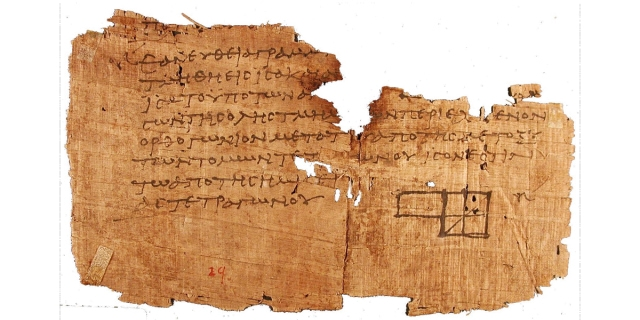
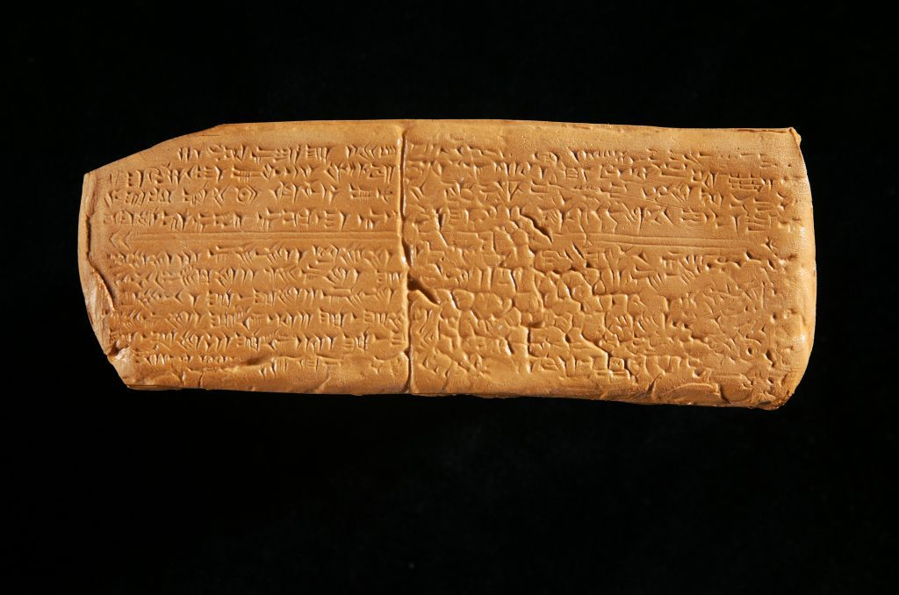

https://hymnary.org/browse/popular/texts
Most Popular Texts
-
Holy, Holy, Holy! Lord God Almighty!
-
Be Thou My Vision
-
Come, Thou Fount of Every Blessing
-
When Peace, Like a River
-
My Hope is Built on Nothing Less
-
Amazing grace! (how sweet the sound)
-
To God Be the Glory
-
O Come, O Come, Emmanuel
-
All Hail the Power of Jesus' Name
-
Love Divine, All Loves Excelling
-
What a Friend We Have in Jesus
-
Come, Thou long expected Jesus
-
O Worship the King all glorious above
-
How Great Thou Art
-
All Creatures of our God and King
Current Trending Texts
-
He Leadeth Me
-
Come to Jesus
-
Blessed Assurance
-
Lovest Thou Me?
-
My Soul, Be on Thy Guard
-
Holy, Holy, Holy! Lord God Almighty!
-
Praise, My Soul, the King of Heaven
-
Say, with what salutations
-
Love Divine, All Loves Excelling
-
Praise to the Lord, the Almighty
-
O God, Our Help in Ages Past
-
Take My Life, and Let It Be
-
My Hope is Built on Nothing Less
-
Be Thou My Vision
-
To God Be the Glory
These are the 250 texts published the most frequently in
modern hymnals indexed by Hymnary.org:
A
B
C
-
Children of the Heavenly Father (featured)
-
Christ Is Alive! Let Christians Sing
-
Christ Is Made the Sure Foundation
-
Christ the Lord is risen today (featured)
-
Christ, Whose glory fills the skies
-
Come Down, O Love Divine (featured)
-
Come, Christians, Join to Sing
-
Come, Thou Almighty King (featured)
-
Come, Thou Fount of Every Blessing (featured)
-
Come, Thou long expected Jesus (featured)
-
Come, Ye Faithful, Raise the Strain
-
Come, ye thankful people, come (featured)
-
Come, ye that love the Lord
-
Comfort, comfort ye my people (featured)
-
Cordero de Dios
-
Creeds
-
Crown Him with Many Crowns (featured)
-
Crucifixion to the World by the Death of Christ (featured)
D
E
F
G
H
-
Hail the Day That Sees Him Rise (featured)
-
Hail to the Lord's Anointed (featured)
-
Hark! The Herald Angels Sing (featured)
-
Hark, the Glad Sound
-
Have Thine Own Way, Lord (featured)
-
He Is Lord
-
He Leadeth Me (featured)
-
Here I Am, Lord
-
Here, O my Lord, I see Thee face to face
-
Holy Fortitude
-
Holy God, We Praise Thy Name
-
Holy, Holy, Holy! Lord God Almighty! (featured)
-
Hosanna, Loud Hosanna (featured)
-
How Great Thou Art
-
How Sweet the Name of Jesus Sounds (featured)
-
How firm a foundation, ye saints of the Lord (featured)
I
J
-
Jesu, Jesu, Fill Us with Your Love
-
Jesu, Thou joy of loving hearts!
-
Jesus Calls Us, O'er the Tumult
-
Jesus Christ is Risen Today
-
Jesus Loves Me, This I Know (featured)
-
Jesus Shall Reign Where'er the Sun (featured)
-
Jesus, Lover of My Soul (featured)
-
Jesus, Priceless Treasure (featured)
-
Jesus, Remember Me
-
Jesus, the Very Thought of Thee (featured)
-
Joy to the world! the Lord is come! (featured)
-
Joyful, Joyful, We Adore Thee (featured)
-
Just as I Am, Without One Plea (featured)
L
M
N
O
-
O Come, All Ye Faithful (featured)
-
O Come, O Come, Emmanuel (featured)
-
O God, Our Help in Ages Past (featured)
-
O Jesus, I have promised
-
O Lord, Hear My Prayer
-
O Love That Wilt Not Let Me Go
-
O Love, How Deep, How Broad, How High (featured)
-
O Master, Let Me Walk with Thee
-
O Sons and Daughters, Let Us Sing! (featured)
-
O Word of God Incarnate
-
O Worship the King all glorious above (featured)
-
O for a Thousand Tongues (featured)
-
O little town of Bethlehem (featured)
-
O perfect Love, all human thought transcending (featured)
-
O sacred head now wounded (featured)
-
Of the Father's Love begotten (featured)
-
Oh, How I Love Jesus (featured)
-
On Eagle's Wings
-
On Jordan's bank the Baptist's cry (featured)
-
On Jordan's stormy banks I stand (featured)
-
Once in Royal David's City (featured)
-
Onward, Christian Soldiers (featured)
P
R
S
T
W
Y
2 Hours Nonstop Best
50
Christian Hymns of Faith - Greatest A Cappella Gospel Hymns
https://www.youtube.com/watch?v=5IoFYTx33AQ
[00:00:00]
- Mighty to Save [00:03:29]
- Amazing Grace [00:06:06]
- Open the Eyes of My Heart [00:08:34]
- Lord I Lift Your Name On High [00:10:17]
- In Christ Alone [00:13:17]
- Here I Am to Worship [00:17:07]
- How Great Thou Art [00:21:30]
- Hallelujah, We Shall Rise [00:23:20]
- Lamb of God Acappella [00:26:28]
- I Stand In Awe of You [00:28:28]
- His Glory Appears [00:31:38]
- Highest Hope [00:35:12]
- Hide Me Away, O Lord [00:36:48]
- As The Deer Thirsts [00:39:15]
- Glorify Thy Name [00:41:58]
- Lo! What A Glorious Sight [00:43:32]
- All Rise [00:45:51]
- You Are My All in All [00:48:18]
- Healing In It's Wings [00:51:35]
- Arise, For Your Savior Has Come [00:53:36]
- It Is Well With My Soul [00:58:26]
- Hymn to the Creator of Light [01:04:53]
- Be Thou My Vision Hymn [01:08:43]
- Instruments of Peace [01:11:35]
- Rock of Ages [01:15:28]
- Lord Reigh In Me [01:17:02]
- Pour Out My Heart [01:19:42]
- Thank you, Lord! [01:22:13]
- Mansion Robe and Crown [01:24:15]
- This World is Not My Home [01:26:14]
- Just a Little Talk with Jesus [01:29:13]
- Ain't no rock [01:31:25]
- Have You Been to Jesus [01:33:00]
- Faithful Love [01:35:36]
- Firm Foundation [01:37:22]
- Great Are You Lord [01:39:02]
- Turn Your Eyes Upon Jesus [01:40:39]
- At the Cross [01:44:07]
- Victory In Jesus [01:47:03]
- Dare To Stand Like Joshua
04:23
- "I, The Lord Of Sea And Sky", Congregational Singing
09:11
- "Be Still For The Presence Of The Lord", led by Lesley Garrett
13:28
- "Amazing Grace", led by Eddi Reader
18:16
- "Guide Me, O Thou Great Redeemer", led by Wynne Evans
22:22
- "I Vow To Thee, My Country", led by Colin Thackery
26:42
- "Abide With Me", led by The Kingdom Choir
30:15
- "Dear Lord And Father Of Mankind", led by Katherine Jenkins
34:40
- "In Christ Aone", led by Daniel O' Donnell
39:47
- "How Great Thou Art", led by Aled Jones
45:26
- "Jerusalem", led by Perfect Pitch Young Choir Of The Year 2019
The
Greatest Hymns of All Time (as chosen by America readers)
https://www.americamagazine.org/faith/2019/10/02/greatest-hymns-all-time-chosen-america-readers

In honor of the group’s farewell concert, we asked our readers to choose their
favorite St. Louis Jesuits hymns. We also wanted to know how the St. Louis
Jesuits’ songs ranked among Catholics’ favorite hymns. Nearly 500 people
responded to a survey, picking their top 10 favorites of all time and their top
five St. Louis Jesuit hymns, three of which also appeared on our top 10 list.
1. “Be
Not Afraid” (1975)
Composed by Bob
Dufford, S.J.
President Bill Clinton wrote in his autobiography
“My Life” that the song was “one of my favorite hymns and a good lesson for
the day.”
2. “Here
I Am, Lord” (1981)
Composed by Dan
Schutte
Schutte wrote the hymn in two days after being asked to compose a new song for a
diaconate ordination Mass only four days before the service.
3. “On
Eagle’s Wings” (1979)
Composed by Michael
Joncas
The song was performed in Italian during the funeral of famed operatic tenor
Luciano Pavarotti—one of Father Joncas’s personal heroes—in 2007.
4. “Amazing
Grace” (1779)
Composed by John
Newton, E. O. Excell
Some historians believe that Harriet Beecher Stowe’s novel Uncle
Tom’s Cabin popularized the version of “Amazing Grace” that we sing today.
5. “Ave
Maria” (1825)
Composed by Franz
Schubert
Schubert did not actually title the song “Ave Maria” when he composed it. Originally
called “Ellens dritter Gesang” (“Ellen’s Third Song”), the song was one of seven
written for Schubert’s Opus 52, which is based on Walter Scott’s poem “Lady of
the Lake.”
6. “Prayer
of St. Francis” (1967)
Composed by
Sebastian Temple
The prayer’s origins have been traced back to 1912 in a French spiritual
magazine called La Clochette (“The
Little Bell”), but the author’s identity remains unknown.
7. “You
Are Mine” (1991)
Composed by David
Haas
In 2006 “You Are Mine” placed fourth in a
national survey conducted by the National Association of Pastoral Musicians on
songs that made a difference in individuals’ faith lives.
8.
“How Great Thou Art” (1885)
Composed by Carl
Boberg
Boberg was inspired to compose the hymn after encountering a sudden storm on his
walk home from church near Kronobäck, Sweden.
9.
“One Bread, One Body” (1978)
Composed by John
Foley, S.J.
This hymn’s memorable refrain draws upon Corinthians 10:17: “Because there is
one bread, we who are many are one body, for we all partake of the one bread.”
10.
TIE “Jesus Christ is Risen Today” (1749) and “How Can I Keep from Singing?”
(1869)
Composed by John
Arnold (“Jesus Christ Is Risen Today”) and Robert Lowry (“How Can I Keep from
Singing?”)
In 1740, Charles Wesley—the founder of Methodism—added an alternative fourth
verse to “Jesus Christ Is Risen Today,” which was later integrated into the
hymn.
Creeds and Confessions
|
# |
SONG NAME |
SCRIPTURE |
SECTION |
TUNE |
LICENSE |
|
769 |
Keep What You Have Believed( |
2 Timothy 3:14-17 |
Creeds and Confessions |
DIADEMATA |
CCLI, OneLicense, Public Domain |
|
770 |
In Christ Alone( |
|
Creeds and Confessions |
IN CHRIST ALONE
|
CCLI |
|
771 |
The Nicene Creed 1( |
|
Creeds and Confessions |
|
|
|
772 |
My Hope is Built on Nothing Less( |
|
Creeds and Confessions |
SOLID ROCK
|
Public Domain |
|
773 |
O LORD, You Are My Light( |
Psalm 27 |
Creeds and Confessions |
RHOSYMEDRE
|
Public Domain |
|
774 |
El Señor es mi luz/The Lord Is My Light( |
Psalm 27 |
Creeds and Confessions |
EL SEÑOR ES MI LUZ |
LicenSing, Contact Copyright Holder |
|
775 |
Across the Lands(
(You're the Word of God the Father)
|
|
Creeds and Confessions |
|
CCLI |
|
776 |
A Mighty Fortress Is Our God( |
|
Creeds and Confessions |
EIN FESTE BURG
|
Public Domain |
|
777 |
God Is So Good( |
|
Creeds and Confessions |
GOD IS SO GOOD |
Public Domain |
|
778 |
Affirmation: What Do You Believe About God( |
|
Creeds and Confessions |
|
|
|
779 |
The Supremacy of Christ( |
Philippians 2; Colossians 1:15-20 |
Creeds and Confessions |
|
|
|
780 |
I Love You, Lord, Today( |
|
Creeds and Confessions |
I LOVE YOU, LORD, TODAY |
Contact Copyright Holder |
|
781 |
My Only Comfort( |
|
Creeds and Confessions |
CONSOLATION/KENTUCKY HARMONY/MORNING SONG/RESIGNATION
|
CCLI, OneLicense, Contact Copyright Holder |
|
782 |
In God the Father I Believe( |
|
Creeds and Confessions |
CREEDAL SONG |
CCLI, OneLicense |
|
783 |
The Apostles' Creed( |
|
Creeds and Confessions |
|
Hymns of Faith by Cardiphonia Music
https://cardiphonia.bandcamp.com/album/hymns-of-faith
http://emmauscity.blogspot.com/2018/01/crc-symposium-on-worship-songs-of.html
Adapted from Rev. Jose Luis Casal’s
update of The Apostles’ Creed, 390 A.D.
I believe in God the Father almighty, Maker of heaven and earth,
who guided His people in exile and in exodus,
the God of Joseph in Egypt, Daniel in Babylon, Esther in Persia.
I believe in Jesus Christ, His only Son, our Lord,
conceived by the Holy Ghost, born of the Virgin Mary,
immigrant of heaven and displaced Galilean on earth,
who was raised under occupation and fled as a refugee
with His parents when His life was in danger.
When He returned to His own people,
He suffered under the imperial power
and oppression of Pontius Pilate,
and was unjustly crucified by the empire, dead, and buried.
He descended to hell.
On the third day He rose again, not as a scorned foreigner,
but as the King victorious, ascended to heaven and
empowered to offer us citizenship in God’s eternal Kingdom.
I believe in the Holy Spirit,
the eternal immigrant from God's Kingdom among us,
who speaks all languages, lives in all countries,
and reunites all races.
I believe in the holy catholic Church that is the secure home for the
foreigner among believers across time and in every nationality.
I believe in the communion of the saints that is revealed
when we embrace all of God’s people in our diversity in unity.
I believe in the forgiveness of sins,
which makes us all equal before God at the cross,
and in His reconciliation, which heals our brokenness and
identifies us together more than race, language, or tribe.
I believe in the resurrection of the body when
God will unite us as one people in which all
are distinct and alike at the same time.
I believe in life everlasting in which no one will be a foreigner
but all of God’s people will be citizens of the Kingdom of heaven
when Jesus Christ reigns forever and ever.
Amen.
Each week I have
twenty minutes to sing with the children in church school before they go to
their classes. This year's theme was the Apostles' Creed. I divided the
creed into nine "articles" and chose songs relating to each of them. The
"articles" were taught at appropriate times during the Christian year. At
the end of the year, they were incorporated into the following program,
which was part of a worship service. The children's comments expanded on the
statement in the creed; the congregational responses were taken from the
Contemporary Testimony Our World Belongs
to God, (found in the worship edition of the Psalter
Hymnal, p. 1019).
Most of the songs
were taken from the children's hymnal Songs
for LiFE. (Both the Psalter Hymnal and Songs
for LiFE are available from CRC Publications, 1-800-333-8300.) The
children's part of the service was forty-five minutes long. There were no
"dead spots," since the accompanist played softly while the children spoke
and stopped playing during the congregational responses. The final song,
"Amen," brought more "Amens" from the people's hearts and applause from
their hands. What a thrill it is to be teaching God's children!
Note: You may want to include an
introductory note about the Apostles' Creed in the bulletin or worship
program:
From the beginning of the early church,
Christians have needed a handy way to express their faith. The Apostles'
Creed, which can be traced as far back as the second and third centuries, is
used by believers as a summary of their faith. Although some suppose that
the creed was written by the apostles themselves, there is no evidence to
support this idea. It is, however, an accurate summary of the apostles'
teachings—teachings on which the church is founded. Tonight, we will sing
and say with Christians throughout the centuries what we believe.
THE APOSTLES'CREED IN SONG
Song: "I
Believe in God" SFL 73
Congregation: In
the beginning, God—Father, Word and Spirit—
called this world into being out of nothing,
and gave it shape and order.
Leader: We
say together what we believe:
Congregation: I
believe in God, the Father
almighty,
creator of heaven and earth.
Children: I
believe that God made the world, the sky, the stars, the animals, and all
the people in the world.
Songs
"My God
Is So Great" SFL 35
"The Earth Is the Lord's" (Make Way—Public Praise, Graham Kendrick, Make Way
Music/Kingsway Music. Also in RW 39:22.)
Leader: We
say together what we believe:
Congregation: I
believe in Jesus Christ, his only
Son, our Lord,
who was conceived by the Holy Spirit
and born of the virgin Mary.
Children: I
believe that God's Son, Jesus, came into the world from heaven. That's what
we remember on Christmas.
Congregation: God
remembered his promise to reconcile the world to himself; he has come among
us in Jesus Christ, the eternal Word made flesh.
He is the
long-awaited Savior, fully human and fully divine, conceived by the Spirit
of God and born of the virgin Mary.
Songs
"Believe in the
Lord Jesus Christ" SFL 223
"That Boy-Child of Mary" SFL 130
Leader: We
say together what we believe:
Congregation: He
suffered under Pontius Pilate, was crucified, died, and was buried. He
descended to hell.
Children:I
believe that Jesus died on the cross for my sins, for all the wrong things I
do.
Songs
"What Wondrous Love
Is This" SFL 169
"Were You There," stanza 3 SFL 167
Leader: We
say together what we believe:
Congregation: The
third day he rose again from the dead.
Junior Choir: Part of the Plan SFL
164
Children: But
three days after he died, he came alive again.
Song: "This
Is the Day," stanza 2 SFL 3
Leader: We
say together what we believe:
Congregation: He
ascended to heaven.
Children: He
went into heaven, and now he is with his heavenly Father again.
Song: "Clap
Your Hands," stanza 2SFL ,79
Leader: We
say together what we believe:
Congregation: He
is seated at the right hand of God the Father almighty.
Children: I
believe that someday he is going to come back to the world and I will see
him.
Songs
"Our God Reigns"
PsH 195
"Soon and Very Soon" SFL 194
Leader: We
say together what we believe:
Congregation: I
believe in the Holy Spirit.
Children:I
believe in the Holy Spirit, who is God, and lives inside me when Jesus is my
Savior.
Congregation: Jesus
stays with us in the Spirit, who renews our hearts, moves us to faith, leads
us in the truth, stands by us in our need, and makes our obedience fresh and
vibrant.
Songs
"The Spirit of the
Lord" SFL 187
"If You Believe and I Believe" SFL 242
Leader: We
say together what we believe:
Congregation: I
believe in the holy catholic church, the communion of the saints.
Children: I
believe that God loves the people in our church and that he wants me to love
them too.
Songs
"We Are the Church"
SFL 236
"Children of the Lord" SFL 238
Leader: We
say together what we believe:
Congregation: I
believe in the forgiveness of sins.
Children: I
believe that God forgives me all the wrong things I do because Jesus died
for me.
Songs
"Lead Me, Guide Me"
SFL 220
Children: But
God doesn't want me to keep doing what is wrong and sinful.
Junior Choir: "Discipleship"
SFL 233
Leader: We
say together what we believe: Congregation: I believe in the resurrection of
the
body.
Children: I believe that someday I
will live on a new earth with God forever with my brand-new body!
Song: "I Will
Sing unto the Lord" SFL 105
Leader: We
say together what we believe: Congregation: And the life everlasting.
Children: I love you, Jesus, because you loved me first!
Song: "This
Is How We Know" SFL 202
Congregation: Our
hope for a new earth is not tied to what humans can do, for we believe that
one day every challenge to God's rule and every resistance to his will shall
be crushed. Then his kingdom shall come fully, and our Lord shall rule
forever. Amen!
Song:"Amen"
PsH 3645, PH 299
[We
used a male soloist on the stanzas, with everyone on the Amens.]
In many churches it
is customary to include a profession of faith in worship. This may take the
form of the congregation reciting one of the ecumenical creeds such as the
Apostles’ Creed or the Nicene Creed. Or it may include a reading from one of
the Reformed creeds such as the Heidelberg Catechism. In so doing we not
only affirm what we believe but also express our solidarity with the church
of Christ universal.
Reciting creeds is
one way of expressing our faith. Another way is to sing our
faith. This idea is not new. For years the recitation of the Apostles’ Creed
has been followed by the singing of the Gloria
Patri. But the singing can also be interwoven with or into the creed.
Since singing is such a rich expression of our worship, singing the faith
enhances our expression of it.
What follows are
several ways in which we can give expression to our faith in song
interspersed with reciting the creeds.
The Apostles’ Creed
I believe in God,
the Father almighty,
creator of heaven and earth.
Song: “You
Are Worthy” CH 100, PsH 232, WR 126
I believe in Jesus
Christ, his only Son, our Lord,
who was conceived by the Holy Spirit
and born of the virgin Mary.
He suffered under Pontius Pilate,
was crucified, died, and was buried;
he descended to hell.
The third day he rose again from the dead.
He ascended to heaven
and is seated at the right hand of God the Father almighty.
From there he will come to judge the living and the dead.
Song: “Rejoice,
the Lord Is King” CH 370, PH 155, PsH 408, SFL 180, TH 310, WR 342
I believe in the
Holy Spirit,
the holy catholic church,
the communion of saints,
the forgiveness of sins,
the resurrection of the body,
and the life everlasting. Amen.
Songs
“The Spirit Came as Promised” PsH 418
“There Is a Redeemer” CH 308, SNC 145, SWM 128, WR 117
Heidelberg Catechism (Q&A 1)
Q. What
is your only comfort
in life and in death?
A. That
I am not my own, but belong—
body and soul, in life and in death—
to my faithful Savior Jesus Christ.
Song: “When
We Are Living” PH 400, SNC 193, WR 415
He has fully paid
for all my sins with his precious blood,
and has set me free from the tyranny of the devil.
Song: “Oh,
for a Thousand Tongues to Sing” CH 21, PH 466, PsH 501, SWM 42, SFL 19, TH
164, WR 96
He also watches
over me in such a way
that not a hair can fall from my head
without the will of my Father in heaven:
in fact, all things must work together for my salvation.
Song: “Like a
River Glorious” CH 737, PsH 560, TH 699, WR 435
Because I belong to
him,
Christ, by his Holy Spirit,
assures me of eternal life
and makes me wholeheartedly willing and ready
from now on to live for him.
Song: “Blessed
Assurance” CH 572, PH 341, PsH 490, TH 693, WR 426
A Contemporary Te Deum
You are God: we
praise you;
You are the Lord: we acclaim you;
You are the eternal Father: all creation worships you.
To you all angels, all the powers of heaven,
cherubim and seraphim, sing in endless praise:
Holy, holy, holy, Lord God of power and might,
heaven and earth are full of your glory.
Songs
“Holy God, We Praise Your Name” (st. 1-2) CH 2, PH 460, PsH 504, TH 103, WR
138
“You Are Holy” SNC 20
The glorious
company of apostles praises you.
The noble fellowship of prophets praises you.
The white-robed army of martyrs praises you.
Throughout the world the holy Church acclaims you.
Songs
“Holy God, We Praise Your Name” (st. 3)
“Lord Most High” SNC 47
Father of majesty
unbounded;
your true and only Son, worthy of all worship;
and the Holy Spirit, advocate and guide.
You, Christ, are the King of glory,
eternal Son of the Father.
Song: “Come,
Praise God! Sing Hallelujah!” SNC 38
When you became
human to set us free,
you did not disdain the virgin’s womb.
You overcame the sting of death
and opened the kingdom of heaven to all believers.
You are seated at God’s right hand in glory.
We believe that you will come, and be our judge.
Come, then, Lord, sustain your people,
bought with the price of your own blood,
and bring us with your saints to everlasting glory.
Song: “Holy
God, We Praise Your Name” (st. 4)
Our World Belongs to God (st. 1-2)*
As followers of
Jesus Christ,
living in this world—
which some seek to control,
but which others view with despair—
we declare with joy and trust:
Our world belongs to God!
Song: “The
Lord Is King, Enthroned” PsH 93
From the beginning,
through all the crises of our times,
until his kingdom fully comes,
God keeps covenant forever.
Our world belongs to him!
Song: “He’s
Got the Whole World in His Hands” CH 586, PsH 457, SWM 26, SFL 198, WR 80
God is King! Let
the earth be glad!
Christ is Victor; his rule has begun. Hallelujah!
The Spirit is at work, renewing the creation.
Praise the Lord!
Songs
“This Is My Father’s World” CH 143, PH 293, PsH 436,SWM 62, SFL 95, TH 111,
WR 21
“Let All Creation Bless the Lord” SNC 34, WR 25
* Note: the
complete text of the Contemporary Testimony Our
World Belongs to God can be found at http://www.crcna.org/pages/our_world_main.cfm.
Excerpt
Options for Singing Creeds in their Entirety
The Apostle’s Creed
“Apostles’ Creed” (17th cent.) PsH 519
“Apostles’ Creed” (Miladin) TH 741
“Apostles’ Creed” (Taylor) TH 742
“I Believe in God Almighty” (Dunstan) SNC 175
Nicene Creed
“Nicene Creed” (Draesel) PsH 520
Heidelberg Catechism
Q&A 1
“My Only Comfort, Now, Always” (Veenstra), RW 72
“My Only Comfort in Life and in Death” (Brink) PsH 549
Q&A 21
“The Son of God, through His Spirit” (Brink) PsH 507
Te Deum
“Holy God, We Praise Your Name” CH 2, PH 460, PsH 504, TH 103, WR 138
Our World Belongs to God (st. 1-2)
“Our World Belongs to God” (Brown), www.crcna.org/pages/sesquicentennial_hymn.cfm
Titles, lyrics, recordings, printed music sources
Songs for Faith Promise Conventions and other missions or missionary events such
as Work & Witness team commissioning
services
Contemporary | New
words/old tunes | Christian
songs in other languages
Classic missions songs in the public domain (unless otherwise noted) -- s to
free music downloads. Lyrics, audio of tunes and stories behind many of these
songs can be found at: http://www.hymntime.com/tch/index.htm
Promoting Christian missions through music: Looking for a Faith
Promise or missions conference theme? Use one of these song titles. Some or
all of the verses of these songs lend themselves to missionary emphases
s to printable lyrics and music as well as recordings have been included.
- A Missionary Cry -- Albert
B. Simpson and James Burke
- "A hundred thousand souls a day
are passing one by one away in Christless guilt and gloom. . . . They're
passing to their doom."
- 1891 [ printed music
and words from 1962 Christian and Missionary Alliance hymnal ]
- A World-Wide Revival — Lelia Morris ( often listed as "Mrs. C. H. Morris")
- "For a world-wide revival,
blessed Master, we pray. . . for this world, dearly purchased by the blood of
God's Son, back from Satan's dominion
and from sin must be won."
- 1910 [ printed music ]
- All The World for Jesus — Grace Davis and J.H. Fillmore
- "All the world for Jesus! Let
each one pray and give until remotest nations1 shall
look to Him and live."
- 1894 [ printed music ]
- All Over the World — Eliza Hewitt and William Kirkpatrick
- "Think of the millions who never
have heard one precious promise from God's holy Word. . . . Let the bright
banner of love be unfurled all over the world."
- 1896
- Anywhere with Jesus — Jessie B. Pounds, Helen C. Alexander (stanzas 3-4)
and Daniel B. Towner
- "Anywhere with Jesus, over land
and sea, telling souls in darkness of salvation free; ready as He summons me
to go or stay, anywhere with Jesus when He points the way."
- 1887
- Arm of the Lord, Awake — William Shrubsole and Lowell Mason
- "Almighty God, thy grace
proclaim, in ev'ry land, of ev'ry name."
- 1796 [ printed music
and lyrics from 1910 Free Methodist Hymnal ]
- Bring Them In — Alexcenah Thomas and William Ogden (Matthew 18:12)
- "Hark! 'Tis the Master speaks to
thee, 'Go find my lambs, where'er they be.'"
- 1885 [ printed
music ] [ Sing to the Lord hymnal ] [ Recorded on CD
"Inspirational Favorites: Burl Ives ]
- Bringing in the Sheaves -- Knowles Shaw and George Minor
- "Sowing in the morning . . .
Waiting for the harvest and the time of reaping, we shall come rejoicing,
bringing in the sheaves."
- 1874 [ YouTube ] [ printed
music ] [ "Great
Hymns of the Faith" hymnal ]
- Christ for the World We Sing -- Samuel Wolcott (Mark 16:15)
- "Christ for the world we sing!
The world to Christ we bring with loving zeal . . . with fervent prayer .
. . with joyful song."
- 1869 -- [ published in Hear the Call songbook ] [ Midi
audio and lyrics ]
- Come, Labor On! — Jane Borthwick and J. Buchanan MacMillan
- "Who dares stand idle on the
harvest plain while all around him waves the golden grain?"
- 1962 (Music), Christian Publications [ printed
music and words from 1962 Christian and Missionary Alliance hymnal ]
- Disciple the Nations — Dan Whittemore
- "Come, let us do all we can.
Come, let us all join our hands and disciple the nations until Jesus returns."
- 1976, Lillenas Publishing [ printed
music ]
- Eternal God, Whose Power Upholds (Everyland) -- Henry Tweedy and Lily
Rendle
- "Eternal God, . . . to whom
there is . . . no alien race, no foreign shore, no child unsought, unknown. O
send us forth, Thy prophets true."
- 1928 (winner of winner of Hymn Society of America's annual missionary hymn
competition) -- [ printed
music ]
- Facing a task unfinished -- Frank Houghton
- "Facing a task unfinished that
drives us to our knees . . . The solemn pledge we owe Thee to go and make Thee
known."
- 1930, Overseas Missionary Fellowship [ printed
in Songs of Fellowship Collection, Vol. 1 ]
- Fill up the ranks -- Albert
B. Simpson and George Stebbins
- "They are falling by the mighty
Congo, They are dying in the dark Soudan; They are lying neath the sun of
India, They are buried by the shores of Japan . . . Who will enlist in the
hosts of the Lord?"
- [ printed music from
1962 Christian and Missionary Alliance hymnal ]
- Fling out the banner — George Doane and John Calkin (same tune used with
"I heard the bells on Christmas day")
- "Fling out the banner! heathen
lands shall see from far the glorious sight"
- 1848, [ printed music ]
- Follow Me — Ira Stamphill
- "Oh, Jesus, if I die upon a
foreign field someday, 'Twould be no more than love demands, no less could I
repay"
- 1953 [ She
et music to download ]
- For My Sake and the Gospel's -- Edward H. Bickersteth and Arthur S.
Sullivan
- "The trump of jubilee proclaims
to every nation, from pole to pole, by land and sea, glad tidings of
salvation."
- 1899 [ printed music and
words from 1962 Christian and Missionary Alliance hymnal ]
- For the Whole Wide World — Lelia Morris ( often listed as "Mrs. C. H.
Morris" )
- "Of one blood God hath made all
the nations of the earth. . . . We must carry the Gospel to earth's remotest
bound. Men are dying for the precious word."
- 1912 [ printed music ]
- From Greenland's Icy Mountains -- Reginald
Heber and Lowell Mason
- "Salvation! O Salvation! The
joyful sound proclaim, 'til earth's remotest nation has learned Messiah's
name."
- 1819 [ printed music ]
[ Great Hymns of the
Faith hymnal ]
- From the rising of the sun — anonymous
- "From the rising of the sun to
the going down of the same, the name of the Lord shall be praised" (the
allusion in Psalm 113, from which this is taken, is geographical rather than
time of day)
- [ words and audio ]
- Go! — Paul Rader
- "'Uttermost part' is His order;
Dare any answer no? What will you do when you meet Him, if you refuse to go?"
- 1918 [ printed music ]
Also published in Hymns of Glorious Praise ]
- Go and Tell Them -- A.B.
Simpson and Ada Gibbs
- Send the gospel of salvation to
a world of dying men. Tell it out to every nation till the Lord shall come
again."
- [ Voices in Worship hymnal ]
- Go Forth And Tell! -- James Sheldon (Acts 1:8)
- "O Church of God, awake! God's
saving news to all the nations take. . . . Go till all nations His great name
adore."
- 1964, Jubilate Hymns Limited / Hope Publishing [ Sing to the Lord hymnal,
set to George Warren's "National Hymn" tune ]
- Go, Labor On: Spend and Be Spent — Horatius Bonar
- "The world's dark night is
hastening on. . . . Go forth into the world's highway. Compel the wanderer to
come in."
- 1843
- Go Tell the Untold Millions -- John W. Peterson
- "Out in the darkness of sin they
are waiting . . . Go tell the untold millions over the whole world wide."
- 1962, Singspiration [ Great
Hymns of the Faith hymnal ] [published in Hymns of Glorious Praise hymnal
]
- Go Ye Into All the World — James McGranahan
- "All power is given unto Me. Go
ye into all the world and preach the gospel."
- 1886 [ printed music ]
[found as "Far, Far, Far
Away in Sin and Darkness Dwelling" in Hymns for the Family of God hymnal
]
- Go, Ye Messengers of God — Joshua Marsden and William J. Kirkpatrick
- "Bear the tidings round the
ball; visit every soil and sea. Preach the cross of Christ to all."
- 1812 [ printed music ]
- God calls Us -- Linda Rebuck and Tom Fettke
- "Because so many need to know,
it's up to you and me to go . . . God calls us."
- 1985, Pilot Point Music and Lillenas Publishing [ printed
music ]
- Gospel Tidings -
- "How beauteous are their feet who stand on Zion's hill, who
bring salvation on their tongues. . . Through all the earth abroad; let every
nation now behold their Savior and their God."
- Hail To The Brightness of Zion's Glad Morning (also known as "The Latter
Day") -- Thomas Hastings and Lowell Mason (Isaiah 9:2)
- "Joy to the lands that in
darkness have lain! . . . See, from all lands, from the isles of the ocean,
praise to the Savior ascending on high."
- 1831[ Great Hymns
of the Faith hymnal ]
- Hark! The Voice of Jesus Calling — Daniel March and Louis von Esch ( also
known as "Hear the Voice of Jesus Calling")
- "Who will go and work today?
Fields are white, the harvest waiting. Who will bear the sheaves away?"
- 1868 [ printed music ]
[ found as "Hear the
Voice of Jesus Calling" in Hymns for the Family of God hymnal ]
- Harvest Bells — William Penn and J.M. Hunt
- "The harvest field is white, and
many souls are sinking into eternal night. The harvest bells are ringing."
- 1882
- Harvest Time -- Paul Rader and Lance Latham
- "The harvest fields are bending
with precious ripened grain; More reapers now are needed."
- 1921
- Harvest Time — Wanda Smith
- The grain is falling; the
Savior's calling. Oh, do not wait! It's growing late. Behold, the fields are
white; it's harvest time."
- 1949, Aim High Music Group / BMG Music Publishing Published in Sing His
Praise
- Haste Away — Onie L. Francis
- "Rouse, O reapers, up and haste
away . . . Haste unto the world wide harvest field."
- 1923 (published in three hymnals: Gospel Tidings: a Book of Select
Gospel Songs, The Crown, and Victory for Christian Work and Worship)
- He Was Not Willing — Lucy Meyer
- "Perishing, perishing! Harvest
is passing, reapers are few and the night drawing near."
- [ printed music from
1962 Christian and Missionary Alliance hymnal ]
- Heralds of Christ -- Laura Copenhaver and George Warren
- "Through desert ways, dark fen,
and deep morass, through jungles, sluggish seas and mountain pass . . .
Prepare across the earth the King's highway."
- 1915 [ printed music ]
- Here Am I, Send Me -- Charles Gabriel and J. Gilchrist Lawson
- "The field is white, the
laborers few. Here am I, send me! Over mountain, plain or sea,. . . I'll go to
the ends of the earth for Thee."
- 1910 [ printed music ]
- How Beauteous Are Their Feet -- Isaac Watts and Louis Bourgeois (Romans
10:15)
- "How beauteous are their feet .
. . who bring salvation on their tongues. . . Let every nation now behold
their Savior and their God!"
- 1707
- How Shall They Hear the Word of God? -- Michael Perry and Koch
- "How shall the gospel be
preached that sinners may repent? . . . So, send us Lord, for we rejoice to
speak of Christ with life and voice."
- 1982 (lyrics), Hope Publishing [ printed
piano music ] [ audio
file ]
- I'll Go Where You Want Me To Go -- Mary Brown and Carrie Rounsefell
- "There's surely somewhere a
lowly place in earth's harvest fields so wide where I may labor through life's
short day for Jesus the Crucified."
- 1899 [ YouTube ] [ printed
music ] [ published in Hear the Call songbook ] [ Great
Hymns of the Faith ] [ published in Hymns of Glorious Praise hymnal
]
- If Jesus Goes With Me — C. Austin Miles
- "It may be I must carry the
blessed word of life across the burning deserts to those in sinful strife . .
. If Jesus goes with me, I'll go anywhere."
- 1908 [ Songs of
Faith and Praise hymnal ] [ published in Hymns of Glorious Praise hymnal
]
- Imagine the Harvest — Todd Webb
- "Imagine the harvest; reach out
to our world. Retelling the story . . . Redeeming the lost ones at home and
abroad."
- 1997, Nazarene World Mission Society (Quadrennial theme song) [ Sheet
music: lyrics and music ]
- In Christ There Is No East Or West — William Dunkerley (John Oxenham) and
Alexander Reinagle
- "In Christ there is no East or
West, In Him no South or North; But one great fellowship of love throughout
the whole wide earth."
- 1908 [ published in Hear the Call songbook ] [ Great
Hymns of the Faith hymnal ]
- Increase My Vision — Dick Anthony
- "Increase my vision, my vision
of the lost; help me to understand the value, not the cost."
- 1971, Lillenas Publishing [ printed
music ]
- Jesus Saves! — Priscilla J. Owens and William J. Kirkpatrick (Psalm 96:2)
- "Bear the news to every land.
Climb the steeps and cross the waves. 'Onward!' 'tis our Lord's command."
- 1868 -- [ Sing to the Lord hymnal ]
- Jesus Shall Reign — Isaac Watts and John Hatton
- "Jesus shall reign where'er the
sun does his successive journeys run . . . People and realms of every tongue
dwell on His love."
- 1719 [ printed music ]
[ hymn story ]
- Jesus, Use Me ‐ Jack and Billy Campbell
- "If it be Thy will, Lord, to
send me o'er the sea, I'll follow Thee tho' death should come my way."
- 1963, Gospel Publishing House [ published in Hymns of Glorious Praise hymnal
]
- Labor On — Christopher R. Blackall and W. Howard Doane
- "In the harvest field there is
work to do, For the grain is ripe, and the reapers few"
- `870
- Lead On, O King Eternal — Ernest Shurtleff and Henry Smart
- "Lead on, O King eternal, to
lands of deepest night; We follow where Thou leadest as heralds of the light"
( words from third verse found only in Voices in Worship: Hymns of the
Christian Life hymnal )
- Let Us Go -- Albert
B. Simpson and Ludwig van Beethoven (arrangement by Eldon McBride)
- "Let us go and preach the gospel
as a witness to the world. And for every tongue and people let Christ's banner
be unfurled."
- 1998 (music) Eldon McBride [ Voices in Worship hymnal ]
- Let your heart be broken — Bryan Jeffery Leech and Fred Bock
- "Let your heart be broken for a
world in need . . . Blest to be a blessing . . . Serve Him far and near."
- 1976, Fred Bock Music Company [ Hymns
for the Family of God hymnal ]
- Lift Up Your Heads, Ye Gates of Brass — James Montgomery
- "Where hallowed footsteps never
trod, take your appointed post. . . .Go to the conquest of all lands — All
must be His at length"
- [ printed music from
1962 Christian and Missionary Alliance hymnal ]
- Lord of the Living Harvest — John S. B. Monsell and Lowell Mason
- "Lord of the living harvest that
whitens o'er the plain . . . Accept these hands to labor, these hearts to
trust and love."
- 1866 [ printed music ]
- Lord of the Harvest -- Bill O'Brien and Dick Anthony
- "Lord of the harvest, the
laborers are so few; Lord of the harvest, there's so much yet to do."
- 1977, Lillenas Publishing Company [ printed
music ]
- Lord, Thy Church On Earth Is Seeking -- Hugh Sherlock and Thoro Harris
- We would heed thy Great
Commission, Go ye into every place'"
- 1959, Nazarene Publishing House [ MP3
audio ] [ words
and music printed in The Baptist Hymnal (1991 edition) ]
- Macedonia -- Anne Ortlund and Henry Cutler (Acts 16:9)
- "The vision of a dying world is
vast before our eyes"
- 1966, Anne Ortlund [ Hymns
for the Family of God hymnal ]
- Missionaries -- Claude and Carolyn Rhea
- "Missionaries tell of Jesus
round the world . . I can help them."
- 1975, Lillenas Publishing [ printed
music ]
- My Trust -- A.B.
Simpson and Gene Rivard
- "Let me be faithful to my trust,
telling the world the story. Press on my heart the woe. Give me the will to
go."
- 2002 (music), Gene Rivard [ Voices in Worship hymnal ]
- O Zion, Haste — Mary Ann Thomson and James Walch (Isaiah 40:9) (also
titled "O Christians, Haste")
- "Proclaim to every people,
tongue and nation that God, in whom they live and move, is love. Tell how He
stooped to save His lost creation and died on earth that man might live
above."
- 1868 -- [ printed music ]
[ published in Sing to the Lord hymnal ]
- Our God Reigns -- Leonard (Lenny) Smith
- "How lovely on the mountains are
the feet of him who brings good news."
- 1974, 1978, New Jerusalem Music [ sheet
music with melody line and guitar chords ] [ SATB
arrangement by Tom Fettke ] [ Lenny
Smith and family singing ] [ orchestral
background ]
- Our Mission — Margot Zilch
- "We go at His commission, We
move at His command . . . to men of every land."
- 1968, Gospel Publishing House [ published in Hymns of Glorious Praise hymnal
]
- Reach Your Arms Around The World — Haldor Lillenas and Vida Munden Nixon
- "Spread abroad the story of
salvation, the world wide world around; to each kindred, every tribe and
nation, wherever sin is found."
- 1928, Renewed 1955, Lillenas Publishing Company [ published in Hymns of
Glorious Praise hymnal ]
- Ready — Charles Tillman and A.C. Palmer or S.E.L.
- "Ready to stay at home and send
others if He sees best. Ready to go, ready to stay."
- 1903 [ printed music ]
[ published in Hymns of Glorious Praise hymnal ]
- Reapers, Haste Away -- Virgil O. Stamps
- "O see the golden harvest . . .
Go to the harvest field."
- Used in two hymnals: Favorite Radio Songs and Praise Evangel for
Sunday Schools
- Redeem the Time — Albert
B. Simpson and Margaret M. Simpson
- "Redeem the time, let us send
the gospel to the farthest bounds of the human race; Over all the world let us
spread the tidings while lasts our day of grace."
- 1962, Christian Publications [ printed
music from 1962 Christian and Missionary Alliance hymnal ]
- Rescue the Perishing — Fanny Crosby and William Doane (Jude 23)
- "Rescue the perishing. Duty
demands it. Strength for thy labor the Lord will provide."
- 1869 [ printed music ]
[ published in Hymns of Glorious Praise hymnal and in Sing to the
Lord hymnal ]
- Rise, Thou Light of Gentile Nations — Hermann Fick and Johann Thommen
- "Sound we forth the Gospel
tidings to the earth's remotest bound that the sinner has been pardoned and
forgiveness can be found. . . May our zeal to help the heathen be increased
from day to day."
- 1885
- Roll On, Thou Mighty Ocean — James Edmeston and Robert Jackson
- "Bear messengers of mercy to
ev'ry land . . . that man may sit in darkness and death's black shade no more"
- 1822 [ printed music ]
- Saving and Serving — Albert
B. Simpson and Margaret M. Simpson
- Going where darkness and sorrow
are found; Seeking the lost to earth's uttermost bounds."
- [ printed music from
1962 Christian and Missionary Alliance hymnal ]
- Savior, Sprinkle Many Nations — Arthur C. Coxe and John Zundel (Isaiah
1:15 KJV)
- "Savior, lo, the isles are
waiting. . . . Of the preacher, speed the foot and touch the tongue 'til on
earth by every creature 'Glory to the Lamb' be sung."
- 1851 [ printed music ]
- Send the Gospel Light — Fanny Crosby and Ira Sankey
- "Send the Light, oh, send it
quickly to the isles beyond the sea"
- 1899
- Send the Light -- Charles Gabriel
- "There's a call comes ringing
o'er the restless wave, 'Send the light!' . . . We have heard the Macedonian
call today, 'Send the light!'"
- 1890, [ published in Sing to the Lord hymnal ] [ Great
Hymns of the Faith hymnal ] [ Recorded
on CD "Country Mountain Hymns, Vol. 2" ]
- So Send I You — Otis Skillings
- "So send I you. Unto the
uttermost part of the earth, proclaiming the message til all men have heard"
- 1985 and 1987, Lillenas Publishing [ printed
music ]
- So Send I You — by Grace Made Strong — Margaret Clarkson with music by two
different composers: John W. Peterson and Kurt Kaiser (John 20:21)
- "As the Father has sent Me, so
send I you . . . to take to souls in bondage the Word of truth that sets the
captive free."
- 1964, Singspiration Music / Benson Music Group [ published in Sing to
the Lord hymnal (music by Peterson) ]
- Souls in Death and Darkness Lying — Cecil F. Alexander and Thomas Hastings
- "Souls in death and darkness
lying where no light has broken through . . . Thousand voices call us o'er the
waters blue."
- 1830
- Speak, My Lord — George Bennard
- "Hear the Lord of the harvest
sweetly calling, Who will go and work for me today? Who will bring to me the
lost and dying?"
- 1911[ printed music ]
[ published in Hymns of Glorious Praise hymnal ]
- Speed Away — Fanny Crosby and Isaac Woodbury
- "Speed away, speed away, on your
mission of light, To the lands that are lying in darkness and night."
- 1890, [ printed music
with lyrics by Thomas Nelson (1899) ]
- Speed the Light — Elisha Hoffman
- "To the millions living o'er the
deep, deep sea, speed the light . . . There in anguish millions for the gospel
wait. Speed the light. . . . Souls are waiting and the fields are white."
- 1899 [ printed music
and words from 1962 Christian and Missionary Alliance hymnal ]
- Take My Life and Let It Be — Frances Havergal
- "Take my life and let it be
consecrated, Lord to thee. . . . Take my feet and let them be swift and
beautiful for thee."
- 1874 [ printed
music ] [ Recorded on
CD "Hymns in the Vineyard" ]
- Tell the Blessed Story — Haldor Lillenas (I Corinthians 1:23)
- "'Go ye into all the world' and
everywhere tell the blessed story of the cross. . . . Stand no longer idle
while the moments fly."
- 1920 [ printed music ]
[ published in Sing to the Lord hymnal ]
- That the World May Know — Sue Caudill
- "I want the world to know that
Jesus loves them so."
- 1985, Nazarene Publishing House [ printed
music ]
- The Battle Is the Lord's -- E. Margaret Clarkson and Meyer Lyon
- "The harvest fields are white:
How few the reaping hands appear, their strength how slight! Yet victory is
sure."
- [ printed music and
words from 1962 Christian and Missionary Alliance hymnal ]
- The Breaking of the Bread -- Beatrice Bixler
- "Today they die in heathen
lands. They die in want and dread, for they have been omitted in the breaking
of the Bread. Lord, I would give them the Bread of Life."
- 1944, Singspiration [ Voices in Worship hymnal ]
- The Call for Reapers -- J.O. Thompson and J.B.O. Clemm (also called "Far
and Near")
- "Far and near the fields are
teeming with waves of ripened grain. . . Lord of the harvest, send for
reapers!"
- [ printed
music ] [ Great
Hymns of the Faith hymnal ] [ published in Hymns of Glorious Praise hymnal
]
- The Kingdom Is Coming — Mary B. C. Slade and Rigdon M. McIntosh (tune also
credited to Emilius Laroche)
- "The voice of salvation awakes
every nation. 'Come over and help us,' they cry."
- 1876 [ printed music ]
- The Light of the World Is Jesus — Philip Bliss
- "The whole world was lost in the
darkness of sin. The Light of the world is Jesus!"
- 1875 [ printed music ]
- The Macedonian Cry — Mrs. Cecil Alexander and Thomas Hastings
- "Souls in heathen darkness lying
where no light has broken through; souls that Jesus bought by dying. . . .
Thousand voices call us."
- [ printed music ]
- The Morning Light is Breaking — Samuel Smith and George Webb (same tune as
"Stand Up, Stand Up for Jesus")
- "Blest river of salvation,
pursue thine onward way. Flow thou to every nation, nor in thy richness stay."
- 1851 [ printed music ]
- The Ninety and Nine — Elizabeth Clephane and Ira Sankey
- 1868 [ printed music ]
- The Regions Beyond — A.
B. Simpson and Margaret Simpson
- "To the regions beyond I must go
. . . where the story has never been told . . . Till all the world, His
salvation shall know."
- 1904 [ printed music ]
[ published in Hymns of Glorious Praise hymnal ]
- The Vision — H.C. McKinney and Oren Munger
- I have seen the heathen in their
darkness, I have heard their cry of grim despair; All my heart is burning with
the passion to bring to them the light of Jesus."
- 1950, Gospel Publishing House [ published in Hymns of Glorious Praise hymnal
]
- The Whole Wide World for Jesus — J. Demster Hammond and William J.
Kirkpatrick
- "The whole wide world! Proclaim
the Gospel tidings thro' the whole wide world! . . . Till ev'ry tongue confess
Him."
- 1885
- The Work Must Go On -- Laurene Highfield and Samuel Beazley
- "A glad message rings through
the world today . . . The good work must go on and on, til the world for our
Lord is won."
- 1911, renewed 1939, Nazarene Publishing House [ printed
music ]
- This Pair of Hands -- Floyd Hawkins
- "To bring Thy healing touch to
darkest lands, I give to Thee, my God, this pair of hands."
- 1963, 1991, Lillenas [ published in Hear the Call songbook ]
- Thou Whose Almighty Word -- John Marriott and Felice de Giardini
- "Move on the waters' face,
bearing the lamp of grace, and in earth's darkest place, Let there be light. .
. . Through the world, far and wide, Let there be light."
- 1813 [ printed music and
words from 1962 Christian and Missionary Alliance hymnal ]
- Throw Out the Lifeline -- Edwin Ufford and George Stebbins
- "Throw out the lifeline to
danger-fraught men sinking in anguish where you've never been . . . Haste
then, my brother, no time for delay."
- 1888 [ printed music ]
- Thy Kingdom Come — Albert
B. Simpson
- "This is the song I sing: Thy
kingdom come, Thy kingdom come. . . Through all the earth abroad where
humankind has trod, send forth thy word, O God."
- [ Voices in Worship hymnal ]
- Till the Whole World Knows -- Alfred and Bentley Ackley
- "I'll tell to all that God is
love; for the world has never known the great compassion of His heart . . . I
will shout and sing of Christ my King, till the whole world knows"
- 1951, Rodeheaver [ published in Hymns of Glorious Praise hymnal ]
- Twelve Is Not Enough -- Ted Wuerffel
- "'Go into the world,' He's
calling you . . . God into the world and preach the Gospel!"
- 1982 and 1986, Lillenas Publishing [ printed
music ]
- Unto the Uttermost -- Beth Tuley
- In Jerusalem and in Samaria,
unto the uttermost! To the millions lost, we must bear the cross."
- 1964, Gospel Publishing House [ published in Hymns of Glorious Praise hymnal
]
- We'll Girdle the Globe -- V.A. Dake and Ida M. Dake
- "We'll girdle the globe with
salvation, with holiness unto the Lord! And light shall illumine each nation,
the light from the lamp of His word!" classic lyrics that mean we'll cover the
globe or we'll go all the way around the globe
- 1891, [ printed music ]
- We've a Story to Tell to the Nations -- H. Ernest Nicol (Matthew 24:14)
- "We've a story to tell to the
nations that shall turn their hearts to the right. . . . We've a song to be
sung to the nations that shall lift their hearts to the Lord, a song that
shall conquer evil and shatter the spear and sword."
- 1896 -- [ published in Sing to the Lord hymnal ] [ "Great
Hymns of the Faith" hymnal ] [ published in Hymns of Glorious Praise hymnal
] [ Recorded on split trax
CD "America's 25 Favorite Hymns, Vol. 4" ]
- When the whole world lives for Him -- B.D. Ackley and William Charles
Poole
- "When the whole world lives for
Jesus . . . Let us work and haste that day when each tribe and land and nation
gladly owns His rule and sway."
- 1938, Rodeheaver, Word Music [ printed
music ]
- Where He Leads Me -- Edward Blandy and John Norris (Matthew 4:19)
- "I can hear my Savior calling,
'Take thy cross and follow, follow me.'"
- 1890 [ Mahalia Jackson on YouTube ]
- Wherever He Leads, I'll Go — B.B. McKinney
- 1964, Broadman Press [ story
behind the song ]
- Win the Lost at Any Cost — Leon Ellis
- "Souls are dying, men are
crying, won't you lead them to the cross? Go and find them, help to win them."
- 1959, Tennessee Music and Printing Company / SpiritSound Music
- Ye Christian Heralds! — Bourne Draper and Heinrich Zeuner
- "Go proclaim salvation through
Immanuel's name. To distant climes the tidings bear and plant the Rose of
Sharon there."
- 1803 [ printed music ]
- Ye Servants of God, Your Master Proclaim — Charles Wesley and Johann
Haydn/William Croft (Psalm 123:1; Revelation 7:9-12)
- "Ye servants of God, your Master
proclaim, and publish abroad His wonderful Name."
- 1744 [ Voices in Worship hymnal ]
- Your Mission — Ellen Gates and Sidney Grannis
- "If you cannot on the ocean sail
among the swiftest fleet . . . You can lend a hand to help them as they launch
their boats away."
- 1860 [ printed music ]
For those songs that are still under copyright, contact the publishers
concerning costs for reproducing them.
Recruit a budding poet in your congregation to write global outreach words
to a tune people know. Here are examples of world evangelism lyrics set to the
music of some classic gospel songs. These can be used in special missionary
services and events.
"Sing to the Lord a new song." -- Psalm 149:1
- Tune: "Battle Hymn of the Republic" (From
Quebec to Timbuktu)
- Tune: "Battle Hymn of the Republic" (We'll
Prevail in Prayer)
- Tune: "Faith is the victory" (Holiness
-- Our mission to the world)
- Tune: "He Keeps Me Singing" (Hear
the Master Calling)
- Tune: "He Leadeth Me" (I
Am a Debtor)
- Tune: "How Great Thou Art" (World
Mission Hymn)
- Tune: "Jesus Loves Me" (Jesus
Loves Them)
- Tune: "Jesus saves" (Holiness,
Holiness)
- Tune: "Joy to the world" (Let's
lift up Christ at home and abroad)
- Tune: "Joyful, joyful we adore thee" (Let's
join hands to lift up Jesus)
- Tune: "O for a thousand tongues" (A
missionary prayer)
- Tune: "The solid rock" (Let's
lift up Christ at home, abroad)
- Tune: "What a friend" (Bridging
cultures: That the world may know)
- Tune: "What a friend we have in Jesus" (What
a Glorious global family)
- Tune: "When the roll is called up yonder" (Resurrection
morning)
- Tune: "When we all get to heaven" (Go
ye -- the commission; Holiness -- the message)
Titles, lyrics, recordings, printed music sources
A page of more than 150 worship songs about reaching the lost
What's your favorite global missions song?
"They say 'music soothes the savage beast.' It also can educate, convince,
persuade, motivate, and inspire. We asked 30 missions pastors to list the best
missions songs in contemporary Christian music. I was impressed by this list
from Kurt."
- You Said (Live) 4:34 by Hillsong
- Go Light Your World 4:51 by Chris Rice
- Until the Whole World Hears 5:04 by Casting Crowns
- Tears of the Saints 6:17 by Leeland
- If We Are The Body 3:59 by Casting Crowns
- All Over The World 4:19 by Matt Redman
- Tell The World 4:05 by Hillsong
- Outside of These Walls 3:23 by Tim Foot
- For the Sake of the Call 5:31 by Steven Curtis Chapman
- God Follower 4:19 by Steven Curtis Chapman
- No Greater Love 4:59 by Steven Curtis Chapman
- Missions Flame 5:35 by Matt Redman
- Jesus Saves 3:47 by Jeremy Camp
- Mighty to Save 6:51 by Hillsong
- To the Ends of the Earth 4:48 by Hillsong
- God of This City 4:58 by Chris Tomlin
- All The Nations 5:53
- I Will Go 3:17 by Starfield
- The Other Side of the World 2:44 by Rich Mullins
- Our God Saves 5:02 by Paul Baloche
- Come To The Water 4:06 by Chris Tomlin et al
- Face of Christ 3:47 by Chris Rice
- God of Justice 5:22 by Aaron Keys
- What Now 4:37 by Steven Curtis Chapman
- Friend Of The Poor 5:10 by Leeland Mooring, Andy Park
—from Brigada, a global missions newsletter
Songs for Faith Promise Conventions and other global missions or missionary
services
"He put a new song in my mouth" -- Psalm 40:3
Promoting Christian missions through music: In some of these songs the
missionary emphasis is only inferred. In others, a phrase or two has a global
missions nuance; in some the theme of world evangelization permeates the entire
song.
- A Billion Starving People - Keith Green
- 1984, Sparrow Records [ YouTube
recording" ] [ download song ]
- All Around the World — Al Denson
- "All around
the world I see the arms of Jesus reaching. All around the world, healing
hearts and souls and teaching perfect love to every man and woman, boy and
girl."
- All Nations — John Chisum and George Searcy
- "You are great
and mighty, Lord. You are God alone; You gather the nations together to
worship at Your throne."
- 1989, Ariose Music / Tourmaline Music [ MP3
sound clip ]
- All Over the World — Martin Smith and Matt Redman
- "All over the
world Your song will resound. All over the world Your praises ring out. . . .
And every nation tribe and tongue come together join as one"
- 2005 Thankyou Music [ YouTube ]
- All Over the World - Terry Butler
- "Your spirit
is moving all over the world. You're touching the nations."
- 1995, Mercy/Vineyard Publishing
- All Over the World - Roy Turner
- "All over the
world, there's a mighty revelation of the glory of the Lord, as the waters
cover the sea."
- 1984, Kingsway's Thankyou Music [ YouTube
video ]
- All the Nations - Chris Davis
- To You belong
all the nations, To You belong all the peoples. . . .Ev'ry culture, ev'ry
race, find expression to give Him praise!"
- 2001, Tophat Music [ lyrics
and guitar chords ]
- All the Nations - William Pacarro
- "All the
nations You have made will come and worship You, Jesus! . . . You are Lord of
all the earth"
- 1992, New Song Music [ words
and music ] [ MP3
audio file ]
- Ancient of Days - Jamie Harvill and Gary Sadler
- From every
nation, all of creation, bow before the Ancient of Days! Every tongue in
Heaven and earth shall declare Your glory!"
- 1992, Integrity's Hosanna! Music / ASCAP and
Integrity's Praise! Music [ lyrics ]
- Answer the Call - Stephen Tavani
- "There's much
more to your salvation . . . Can you hear the Savior calling as He ascended
through the air? Go forth into every nation. Take the message everywhere.'"
- Tavani Music / BMI
- As Bread That is Broken — Claire Cloninger and Paul Baloche
- "Give our
faith a mission field wherever You may call. Lord, love the world through each
one of us until we've touched them all."
- 1995, Integrity's Hosanna! Music / Word Music /
Juniper Landing Music
- Asleep in the Light — Keith Green
- God's calling
and you're the one, but like Jonah, you run . . . The world is sleeping in the
dark"
- 1978, Birdwing Music / BMG Songs / Ears to Hear
[ RealAudio
sound clip ]
- Available - Dick Anthony
- 1971, Lillenas
- "Be" (My heart, My hands, My voice) - Richard Allan Hall, Todd James
Smith, Jason Saetveit and Jeffrey East
- "When you are
shackled in chains, Imprisoned for sharing his name, If you should suffer for
righteousness sake, Don't be afraid."
- 2012, Sony/ATV Music Publishing LLC,
Warner/Chappell Music, Inc, Songtrust Ave [ video ]
- Be the One - Al Denson, Dave Clark and Don Koch
- "Will you be
the one to take His light into a darkened world? Tell me, will you be the one?
Will you be the one? . . . I will be the one."
- 1990, Brentwood-Benson Music Publishing /
Paragon Music Corporation / First Verse Music [ download
printed music ] [ YouTube video ]
- The Call (Abraham's Call) — S. Cirillo and J. Amoruso; English lyrics by
Freddy Hayler
- You're blessed
to be a blessing so all the nations can know God. Send me forth to the
Gentiles, to a land I do not know, to the souls who wait in darkness."
- 2001, Sugar-Melodi
- Bury My Heart on the Mission Field — Tricia Crabtree
- 1998, Tricia Crabtree [ lyrics ]
- Called to All Nations — Steve Adams and Craig Adams
- 2001, Brentwood Benson Music Publishing [ words
and music ]
- Carrier — Jared Anderson
- "I'll be the
carrier of light to the world. I'll be the carrier of hope and salvation. I
will go shine your light to the world. . . . Here am I, send me."
- 2009, Integrity Worship Music [ sheet
music ]
- Carry the Light - Twila Paris
- "Go and preach
the gospel 'til there is no more night. In the name of Jesus Christ, carry the
light."
- 1989, Ariose Music / Mountain Spring Music /
Alexandria House [ YouTube ]
- Carry the Torch - David Baroni and Lynn Keesecker
- "We will lift
high the flame, we will march through the darkness with the light of His name
until the glory of God is seen by the world."
- 1984, Dayspring / Manna Music [ lyrics
and guitar chords ]
- The Closing Days — Noel Richards and Andy Piercy
- 1989, Sovereign Lifestyle Music
- Come Lord Jesus (also titled "Great is the Darkness") - Noel Richards
- "Nations are
slipping in hopeless despair . . In every nation salvation will come . . Help
us bring light to this world"
- 1992, Kingsway's Thank You Music
- Compelled by Love - Brad Bichsel and Sean Scott
- "Compelled by
Love we will go, we will go. . . We will rise up take Your name to the
nations."
- 2011, LIFE::MUSIC::WORSHIP [ Purchase
from iTunes ]
- Cover the Earth - Israel Houghton, Meleasa Houghton, and Cindy Cruse-Ractcliff
- "Let me be an
instrument to exalt and to extend Jesus' name globally as the waters cover the
sea."
- 2003, Champions For Christ Music Publishing /
Integrity's Praise! Music [ lyrics
and video ]
- Cross Every Border - Graham Kendrick
- "We will cross
every border, throw wide every door. Joining our hands across the nations,
we'll proclaim Jesus is Lord."
- 1991, Make Way Music [ pdf
of music and words ]
- Days Of Elijah - Robin Mark
- "These are the
days of the harvest. The fields are as white in the world and we are the
laborers in Your vineyard."
- 1996, Daybreak Music
- Disciple the Nations - Dan Whittemore
- "The harvest
is plenty, the workers are few. With each daily victory, there's much more to
do."
- 1976, Lillenas
- Don't Tell Them Jesus Loves Them - Steve Camp and Robert Frazier (James
2:14-17)
- "We've lost
our passion for the lost and there are billions left to win . . . Why have we
waited so long?"
- 1988, Birdwing Music / Sparrow Song [ RealAudio
sound clip ]
- Each One Reach One - Babbie Mason
- "You must tell
someone who will tell someone until the whole world knows. So will you go and
labor? Will you hold high your light?"
- 1990, Word Music
- The Earth Shall Be Filled — Ron Coile and David Morris
- "Lifting up a
standard to the nations to demonstrate the purpose of His kingdom"
- 1990, Integrity's Hosanna! Music
- Enter the Mission Field — Jon Whiting
- "Go forth and
share His love for all. Enter the mission field."
- 2005, Secret Place Music
- Every Knee — Gary Sadler
- "Everyone will
know it was You. Every knee will bow; Every tongue will cry aloud. Every heart
will know You are worthy, Lord"
- 2001, New Spring Publishing (Brentwood-Benson
Music Publishing and Paintbrush Music)
- Every Tribe — Wayne Drain
- 1996, Thankyou Music (administered by Kingsway
Music)
- Everybody's Got to Know — Andrae Crouch
- 1989, Crouch Music Company / Bud John [ YouTube ]
- Faithful Men - Twila Paris
- Come and join
the reapers . . . Come and share the harvest, Help to light the darkness"
- 1985, Straightway Music / Mountain Spring [ YouTube ]
[ recorded
on CD: "Perennial: Songs for the Seasons of Life" ]
- Fill Us Up And Send Us Out - Matt Redman
- 1995, Kingsway's Thank You Music [ printed in
"The Survivor Songbook" ] [ YouTube ]
- For Such a Time as This — Wayne Watson
- Right now, I
really have no choice but to voice the truth to the nations . . . For such a
time as this I was placed upon the earth to hear the voice of God and do His
will whatever it is."
- Material Music / Word [ lyrics ]
[ printed
music ]
- For the Sake of the Call — Steven Curtis Chapman
- "We will
abandon it all for the sake of the call ... no other reason at all but the
sake of the call. Wholly devoted to live and to die for the sake of the call."
- 1990, Sparrow Song / Careers-BMG Music
Publishing / Greg Nelson Music [ online
sheet music ] [ YouTube ]
- For Your Glory - Scott Wesley Brown
- Woven like a
tapestry, the peoples of the earth will prove the wonders of Your grace. For
every nation will be healed and every covenant fulfilled."
- 1995, BMG Songs [ recorded on CD "Mission of
Praise" ]
- Freely, Freely (also called God Forgave My Sin) - Carol Owens (Matthew
10:8, 28:18)
- "All pow'r is
giv'n in Jesus' name. . . He said: . . . Go in my name and because you
believe, others will know that I live."
- 1972, Bud John Songs [ printed in The
Celebration Hymnal ] [ RealAudio
sound clip ]
- Glory, Glory Lord — Bob Fitts
- "Sing to the
Lord a new song, Sing His praise to the ends of the earth. Let every nation
tell it (declare it!) Till every man has heard (sing out!)"
- 1990, Scripture in Song [ lyrics,
including the refrain in another languages ] [ recorded on CD "I Could
Have Danced" ]
- Go - Leon Patillo
- 1981, Word Music [ YouTube ]
- Go Forth in His Name - Graham Kendrick
- "We are His
children, the fruit of his suffering . . . Called to be holy, a light to the
nations."
- 1990, Make Way Music [ YouTube ]
- Go Forth in Jesus' Name - Carol Cymbala
- "We are
commissioned to show them the way . . . Go forth, His Word to proclaim"
- 2000, Carol Joy Music
- Go Light Your World - Chris Rice
- Carry your
candle, run to the darkness. Seek out the helpless, deceived and poor. Hold
out your candle for all to see it."
- 1995, BMG Songs [ recorded on CD "If My People
Pray" ] [ download song ]
- Go Tell Somebody — Michael Brooks
- 1987, Bud John Songs
- Go Tell the World - Georgian Banov and Claire Cloninger
- Go tell the
world. Go take His word. Go spread His joy to every heart that hungers. Go
speak His name; break every chain."
- 1985, Word / Omnion Music
- Go To All Nations - Bryn Haworth
- Go to all
nations, making disciples, baptizing them in My name. . . Teach them to do all
I told you to do."
- 1991, Kingsway's Thankyou Music [ recorded on CD
"More than a Singer" ]
- God Calls Us - Linda Rebuck and Tom Fettke
- Because so
many need to know, it's up to you and me to go."
- 1985, Pilot Point Music / Lillenas
- God of All Nations medley - Carman
- 1991, Word Music
- Going by Giving - Bill Drake and Dave Davidson
- "We're all
called to be part of this war. By the work we do, we can go there too. . .
Going by giving, you can be there."
- 2003
- Great Among the Nations - John McKenna (Malachi 1:11)
- "From the
rising sun unto its going down, will every place adore You. Your name is great
among the nations."
- 1997, Inside Out Music Productions [ printed
music ] [ MP3
audio file ]
- Hallelujah to the Lamb — Bob Moen and Debbye Graafsma
- Lord I stand
in the midst of a multitude of those from every tribe and tongue. We are Your
people redeemed by Your blood."
- 1997, Integrity's Hosanna! Music
- Hands and Feet - Bob Herdman, Charlie Peacock, Mark Stuart, Tyler Burkum
and Will McGinniss
- "An image
flashed across my TV screen, another broken heart comes into view . . . I want
to be Your hands, I want to be Your feet. I'll go where You send me."
- 1999, Up In The Mix Music, Sparrow Song, Andi
Beat Goes On Music, Flicker USA Publishing [ RealAudio
sound clip ]
- He Is No Fool - Twila Paris
- Based on the words of martyred missionary Jim
Elliot
- 1988, Ariose Music / Mountain Spring Music [ printed
music ] [ YouTube ]
- He Reigns - Peter Furler and Steve Taylor
- "It's the song
of the redeemed rising from the African plain; it's the song of the forgiven
drowning out the Amazon rain; the song of Asian believers filled with God's
holy fire. It's every tribe, every tongue, every nation; a love song born of a
grateful choir."
- 2003, Ariose Music / Soylent Tunes [ lyrics ]
- Healing to the Nations — Bob Fitts
- "Take my
healing to the nations. Bind their broken hearts with love."
- 1982, Scripture In Song / Integrity Music [ printed
music ] [ Recorded on CD "Take My Healing to the Nations and Sacrifice" ]
[ RealAudio
sound clip ]
- Heart for the Nations — Gary Sadler and Martin Nystrom
- Let us be
light to the world. Use us to declare your salvation to the people of the
earth."
- 1994, Integrity's Hosanna! Music
- Heaven is Counting on You - Ray Boltz and Steve Millikan
- Rise up. There
is a world you can win. . . . Run with a heart that is true. Carry the cross,
reaching the lost. Heaven is counting on you."
- 1992, Word Music / Shepherd Boy Music [ lyrics ]
- Here Am I (also titled "Ask of me") - Bob Kilpatrick
- "Ask of me and
I will give you nations . . .Here am I. Send me to the nations as an
ambassador for You."
- 1987, Bob Kilpatrick Ministries [ lyrics
with guitar chords ] recorded on album "Face to Face" ] [ purchase
as MP3 ]
- Here Am I (often listed as "Here I Am") - Bart Millard and Peter Kipley
- "Whom shall I
send? Who will go for me to the ends of the earth?"
- 2001, Simpleville Music/Songs from the Indigo
Room [ sound clip ]
- Here I am, Lord - Daniel Schutte
- "Here I am,
Lord . . . I have heard You calling in the night. I wil go, Lord, if You lead
me."
- 1981, OCP Publications
- Here I Am, Send Me - Melody Green-Severeid and Wendell Burton
- "Lord, you
said the harvest was great, but Lord, looks like the workers are late. It's
getting hard to understand how they ignore your great command."
- 1979 and 1987, Birdwing Music / Cross Purpose
Music / Ears to Hear
- History Maker - Martin Smith
- Is it true
today that when people pray kings and queens will shake? . . . I'm gonna be a
speaker of truth to all mankind."
- 1996, Curious? Music UK [ recorded on CD "King
of Fools" ]
- Hollow Eyes - Bob Hartman
- "Another day
in Nigeria: the children beg for bread; the crops failed; the well ran dry . .
. Do you dare to gaze into their hollow eyes?"
- 1985, Dawn Treader Music / Alexandria House [ guitar
chords ] [ YouTube
audio ]
- Hope of the Nations - Brian Doerksen
- "Jesus, hope
of the nations. Jesus, comfort for all who mourn. You are the source of
Heaven's hope on earth. Jesus, light in the darkness."
- 2001 Integrity's Hosanna! Music [ recorded on CD
"You Shine" ]
- I Will Go - David Ruis
- 1995, Mercy / Vineyard Publishing [ recorded
on CD / cassette "Break Dividing Walls" ]
- Is There Anything I Can Do For You? - Dottie Rambo and David Huntsinger
- "Is there
anything I can do for You? . . . Is there anywhere I can go for You?"
- 1977 HeartWarming Music / John T. Benson
Publishing Company
- Jesus Commands Us to Go - Keith Green
- "We're His
hands and feet. Jesus commands us to go; it should be the exception if we
stay"
- 1984, Sparrow Records [ YouTube ]
- Jesus Saves (also known as Untold Millions) - Larry Bryant
- "A peasant
girl in Mexico, a teacher in Bombay In Africa a fisherman, a housewife in L.A.
. . . Untold millions remain untold"
- 1987, Stonebrook Music Company (EMI Christian
Music Publishing)
- King of the Nations - Graham Kendrick
- "Voice, race
and language blending . . . Bring tributes from the nations."
- 1992, Make Way Music
- Kingdom of Love - Scott Wesley Brown, Billy Smiley and Mark Gersmehl
- 1984, Paragon Music / Pamela Kay Music / BMG
Songs [ lyrics ] [
recorded on CD "The Scott Wesley Brown Collection" ]
- Lament for the Nations - Tim Stamp
- "Some day
they'll stand with the rest of mankind before Him who is worthy, the Judge of
all nations. What will become of them?"
- 2005, Tim Stamp [ Lyrics
and guitar chords ] [ audio ]
[ sheet music ]
- Let the Whole World Know — Lydell Washington
- "Let the whole
world know that Jesus saves. . . . I send, I go, that the world may know"
- 2003, Daniel Thornton [ MP3 ]
- Let Them Know - Lanny Wolfe
- 1975, Lanny Wolfe Music / Gaither [ printed
music ]
- Let Us Talents and Tongues Employ — Fred Kaan and Doreen Potter
- Jesus calls us
in, sends us out . . . God (Immanuel) everywhere! . . . Pass the Word around:
loaves abound!"
- 1975, Agape / Hope Publishing [ lyrics ]
- Let Your Glory Fall — David Ruis
- "Let your
glory fall in this room. Let it go forth from here to the nations."
- 1993, Mercy / Vineyard Publishing [ lyrics ]
- Let Your Heart Be Broken — Bryan Jeffery Leach and James Mountain
- "Let your
heart be broken for a world in need. . . Share your rich resources. Give and
give again."
- 1975, The Evangelical Covenant Church
- Lift Jesus High — Scott Wesley Brown
- "The season of
harvest is now. Rise up and take up your plow. Work while there's still light,
night draweth nigh. Enter the nations, lift up your banner high."
- 1995, Integrity's Hosanna! Music [ recording on
CD "Mission of Praise" ]
- Lift Up Our Eyes - Scott Wesley Brown
- 1995, BMG Songs
- The Light of Jesus to the World - Carman
- 1984, Lehsem Music
- Look What God is Doing - Scott Wesley Brown
- 1988, Pamela Kay Music / Ariose Music /
Alexandria House [ recorded on CD "The Scott Wesley Brown Collection" ]
- Lord of the Harvest - Bill Drake
- "Lord of the
Nations; Of peoples and tribes and tongues . . . Come, fill us and send us"
- 2002, Old Dirt Road Music [ printed
lyrics ]
- Lord of the Harvest - Bill O'Brien and Dick Anthony
- "Lord of the
harvest, the laborers are so few . . . We go now as we ought."
- 1977, Lillenas
- Lord, Send Me Anywhere - David Livingstone and Faye Springer Lopez
- 1978, Musical Ministries / Majesty Music [
Gaither's "Worship His Majesty" hymnal (check used bookstores) ] [ YouTube ]
- Millennial Hymn - Stephen Adams and Franz Joseph Haydn
- "Called to
every culture and nation . . . We have heard that Great
Commission."
- 2000, Brentwood-Benson Music [ Hear the Call songbook
]
- Mission's Flame - Matt Redman
- "Let worship
be the heart of mission's aim. To see the nations recognize your fame, til
every tribe and tongue voices your praise, send us out."
- 2004, Thankyou Music / EMI Christian Music
Publishing [ lyrics ]
[ YouTube ] [ download
song ]
- Move Through Me - Bill Drake
- "Crucify self.
Set me apart so that the nations hear Your truth. Send this ambassador for
You."
- 1998, Old Dirt Road Music / Integrity Music
- My House Is Full, But My Field Is Empty - Lanny Wolfe
- "My house is
full, but my field is empty. Who will go and work for Me today? It seems my
children want to stay around my table, but no one wants to work in my fields."
- 1977, Lanny Wolfe Music / Gaither
- Nearer, My God, to Thee (Missions Version) - Tricia Crabtree
- "People in
foreign lands have never heard of Thee, I am willing now to go."
- 2007, Tricia Crabtree / Faith Music Missions
- No More Night - Walt Harrah
- "See all
around, how the nations bow down to sing. The only sound is the praises to
Christ, our King. Slowly the names from the book are read."
- 1984, Word [ lyrics ]
[ MP3 file ] [ recorded
on "The best of Haven, Volume 2" ]
- Not Be Shaken - Norm Strauss
- "I will
declare my choice to the nations."
- 1997, Mercy / Vineyard Publishing [ lyrics
/ guitar chords ]
- Not To Us - Robert Critchley
- 1996, Wild Ox Publishing
- Now is the Hour - Joe Musser and Larry Mayfield
- 'Go ye into
all the world' is what our Lord demands."
- 1977 and 1980, Lillenas
- One on One - Steve Camp and Margaret Becker
- 1987, His Eye Music / Birdwing Music
- Our God Reigns - Leonard (Lenny) Smith
- "How lovely on
the mountains are the feet of him who brings good news."
- 1970, 1974, 1978, New Jerusalem Music [ sheet
music with melody line and guitar chords ] [ SATB
arrangement by Tom Fettke ] [ audio
clip ] [ orchestral
background ]
- Our Heart - John Chisum and George Searcy
- "Our heart,
our desire is to see the nations worship. Our cry, our prayer is to sing Your
praise to the ends of the earth"
- 1993, Integrity's Hosanna! Music / Integrity's
Praise! Music
- People All Over the World - Bob Farrell, Carl Marsh and Mike Dennis
- 1986, Straightway Music / Shepherd's Fold Music
/ Lehsem Music
- People Just Like Us - Russell Fragar / Darlene Zschech
- "All over the
world people just like us are calling your name, living in your love. All over
the world people just like us are following Jesus."
- 1993, Hillsong [ YouTube ]
- People Need the Lord - Steve Green
- We are called
to take His light to a world where wrong seems right. What would be too great
a cost for sharing life with one who's lost?"
- 1983, Shepherd's Fold Music (EMI Christian Music
Publishing)
- Please Don't Send Me to Africa - Scott Wesley Brown and Phill McHugh
- Please don't
send me to Africa. I don't think I've got what it takes. . . . Just leave me
here in suburbia, in my comfortable middle-class life. . . . Please don't send
me out into the bush."
- 1988, BMG Songs / Pamela Kay Music [ YouTube
with Scott Wesley Brown's explanation of song plus song itself ]
- The power of Your name - Lincoln Brewster and Mia Fieldes
- "And I will
give with the life that I've been given and go beyond religion to see the
world be changed by the power of Your Name"
- 2008, Integrity's Praise! Music. Hillsong
Publishing
- Praises from Every Nation - Ron Kenoly
- Psalm of Thanks - Andy Park
- "Tell all the
nations what He has done. Tell of His mighty deeds."
- 1992, Mercy / Vineyard Publishing [ recorded on
CD "Devoted to You" ]
- Raise Up an Army — Steve Cook and Vikki Cook
- "Raise up an
army, O God to proclaim Your kingdom. . . Our hope, our heart, our vision, to
see in every land your chosen people coming forth."
- 1988, PDI Music
- Reach the World — Mark Bishop
- "A ray of hope
that spreads across the land. Across the mountains, across the sea, . . . And
soon a mighty chorus sings along. Go reach the world."
- 1997, Lillenas [ lyrics ]
- Ready to Serve — Brian James Wallace
- "Ready to
serve, I'm ready to serve. Filled with God's grace, and ready to work."
- 2006, QuayNote Choral Music [ sheet
music ] [ MP3 ]
- Sacrifice - Bob Fitts
- 1987 Scripture In Song (a division of Integrity
Music, Inc.) [ printed in Hosanna! Music Songbook 17 ] [ recorded
on CD ] [ RealAudio
sound clip ]
- Salt and Light - Amy Grant and Wes King
- "We can be a
little salt, be a little light, in this darkened world."
- 1992, Age to Age Music / Locally Owned Music
- Seedtime and Harvest - Bill O'Brien and Dick Anthony
- Seedtime and
harvest, fields full of grain. . . Use me, Lord Jesus."
- 1977, Lillenas
- Send Me - Denise Graves
- 1997, Maranatha Praise / Word Music
- Send Me — Twila Paris
- "Here Am I,
Lord, send me. . . . You have willed that I would become Your hands Lord."
- Send Me - Randy Thomas
- "Send me when
you need someone . . . The battlefield is far away; Warriors are few . . .
Till all the wars have all been won, I'll be serving you."
- 1985, Bud John Songs, Inc / Light Records [ YouTube ]
- 1987, Ariose Music / Mountain Spring Music /
Alexandria House
- Set the World on Fire - Britt Nicole Waddell, Cindy Morgan, and Jason
Ingram
- "I wanna set
the world on fire until it's burning bright for you. . . I wanna feed the
hungry children and reach across the farthest land and tell the broken there
is healing and mercy in the Father's hands."
- 2007, Word Music / Peertunes [ YouTube ]
- Shine Jesus Shine - Graham Kendrick
- "Flow, river,
flow. Flood the nations with grace and mercy. Send forth your word Lord, and
let there be light."
- 1987, Make Way Music [ lyrics ]
- Shout to the Lord All the Earth - Darlene Zschech
- "Shout to the
Lord, all the earth, let us sing Power and Majesty, Praise to the King."
- 1993, Hillsong
- Shout to the North - Martin Smith
- "Shout to the
north and the south. Sing to the east and the west. Jesus is Saviour to all."
- 1995, Curious? Music UK
- Song of Many Sounds - Steve Fry
- 1994, Deep Fryed Music, Word Music
- Song for the Nations — Chris Christensen and Lyndell Leatherman
- "May we be a
shining light to the nations, a shining light to the peoples of the earth."
- 1986, Integrity's Hosanna! Music
- Spirit of the Sovereign Lord - Andy Park
- The Spirit of
the Sovereign Lord is upon us because He has anointed us to preach good news."
- 1994, Mercy / Vineyard Publishing
- Stirred But Not Changed - Lanny Wolfe
- I'm so tired
of being stirred about the lost who need to hear. . . . I'm so tired of being
stirred but not being changed."
- 1980, Lanny Wolfe Music / Gaither [ accompaniment
tracks ]
- Take It To All the World — Anne Herring, Jim Tenneboe and Matthew Ward
- 1987, Latter Rain Music / Megin's College Fund
Music / Midi Mouse Music
- Talkin' About Love — Bill Drake
- "There's a
Commission and there's a Command to tell nations and peoples that the Kingdom
is at hand. . . . Talkin' 'bout Jesus being the answer to the whole of the
human race."
- 2002, Makaira Music, Old Dirt Road Music [ printed
lyrics ]
- Tell the World - Marsha Skidmore
- Go ye
therefore to every nation. Preach the gospel in every land to every language
and every people."
- 1994, Doulos Publishing / Maranatha! Music [ lyrics ]
[ printed in "Praise Hymns and Choruses, Singalong Book, 4th edition" ] [
recorded on CD "Praise Band 5: Tell the World" ]
- Tell Them — Andrae Crouch
- 1975, Bud John Songs
- Ten Four 0 — Bill Drake
- 1995, Bill Drake Music / Operation Mobilisation
[ recorded on CD "Send Me" ]
- Thank You - Ray Boltz
- "Remember the
time a missionary came to your church and his pictures made you cry. You
didn't have much money, but you gave it anyway."
- 1988, Gaither Music [ download
song ]
- There Is a Louder Shout To Come - Matt Redman
- "Even now upon
the earth there's a glimpse of all to come; Many people with one voice,
harmony of many tongues. . . . And what a song we'll sing upon that day."
- 1996, Kingsway's Thankyou Music
- Thy Kingdom Come - C. McKibbin and Charles H. Gabriel
- Thy kingdom
come! and shall not each one sing it, on land and sea, where'er His banner
goes? . . . When peoples all shall crown Him King of kings. . . O haste to
tell the message; The world is dying for the Word of God. . . . Thy kingdom
come! He waits to bless the nations."
- Toward the Mark - Bill Drake
- "There is a
message, the Great Commission . . . I want to give my life"
- 1998, Old Dirt Road Music [ printed
lyrics ]
- The Other Side of the World - Rich Mullins
- "Well the
other side of the world is not so far away as I thought that it was. . . . I
pray it won't be long until Your kingdom comes the other side of the world."
- 1990, BMG Songs
- This is the Gospel of Christ - Scott Wesley Brown
- "To redeem a
people He calls His own from every nation, tongue and tribe"
- 1995, Integrity's Hosanna! Music
- Through all the world - Bryan Jeffrey Leech and Paul Lijestrand
- "Through all
the word let every nation sing to God the King! . . . Through all the word let
every man embrace the gift of grace."
- 1970, Hymn Society of America (Hope Publishing)
[ Hymns for the Family of God hymnal ]
- Turn to Me and Be Saved - Graham Kendrick
- "Turn to me
and be saved, all you nations. For I am God and there is no other."
- 1992, Make Way Music
- Until All Have Been Served - Ray Boltz and Steve Millikan
- "We need to
take them to His word. In every nation let this cry be heard: No, no, not
until all have been served.'"
- 1996, Shepherd Boy Music [ lyrics ]
- Until the Whole World Hears - R. Glidewell, John Mark Hall, Bernie Herms
and Jason McArthur
- "Lord I want
to feel your heart and see the world through your eyes . . . We'll sing until
the whole world hears."
- 2009 - Provident Label Group / Sony Music [ YouTube ]
[ lyrics
and guitar chords ]
- We All Are One in Mission - Rusty Edwards (Romans 12:5)
- "We all are
one in mission; we all are one in call . . . so every folk and nation may feel
God's warm embrace."
- 1986, Hope Publishing
- We are His Hands - Mark Gersmehl
- 1984, Word Music
- We Are Not Ashamed - Andrae Crouch
- 1982, Crouch Music Company / Bud John Songs
- We Declare Your Name - Paul and Rita Baloche and Claire Cloninger
- We'll spread
the power of Your Word to the farthest corners of the earth, wherever there's
a heart that stands in need.
- 1995 Integrity's Hosanna! Music and Juniper
Landing
- We Must Go - William Pacarro
- "We must go .
. . Take His word to all nations and change the world for Him"
- 1992, New Song Music [ words
and music ] [ MP3
audio file ]
- We Speak to Nations - Israel Houghton
- "We speak to
nations: Be opened. We speak to nations: Fall on your knees. We speak to
nations: The Kingdom near to you."
- 2001, Integrity's Hosanna! Music
- Welcome King of Kings - Noel Richards
- 1991, Kingsway's Thank You Music
- What if I Give All? - Mark Pay and Ray Boltz
- "What if I
give all I have. What will that gift do? My son, that gift will change the
world. It will free the multitudes"
- 1996, Shepherd Boy Music / Screaming Toad Music
[ streamed
MP3 ]
- Will You Be Ready? - Michael Brooks
- 1989, Lexicon Music / Paragon Music [ recorded
on CD "Commissioned: Original: ]
- Worthy is the Lamb - Lenny LeBlanc
- "All the
people of the earth will praise His name, for He is Lord. Every tongue confess
and every knee will bow. . . . Every nation will sing: Worthy is the Lamb that
was slain."
- 1991, Maranatha! Music / Len Songs Publisher
- Yes, Lord, Yes - Lynn Keesecker
- "To your will
and to your way, I'll say Yes, Lord, yes.'"
- 1983, Manna Music
- You Said - Reuben Morgan
- "You said,
'Ask and I'll give the nations to you.' Lord, that's the cry of my heart.
Distant shores and the islands will see your light as it rises on us."
- 1998, Integrity Music / Hillsong Music
- You're The Only Jesus - Gordon Jensen
- "If not in
you, I wonder, where will they ever see the One who really cares? If not from
you, how will they find there's One who heals the broken heart, and gives
sight to the blind?"
- 1983, Word Music [ recorded on CD "Tuesdays and
Thursdays" ]
- Your Great Renown - Eric Grover and Steve Cook
- "Our hearts
are longing for the glory of the Lord to be made known in all the Earth . . .
We want to see the nations bow."
- 2000, PDI Worship
- Your Love Compels Me - Doug Holck
- Your love
compels me, Lord, to give as You would give . . . To serve as You would serve,
to be what You would be.
- 1982, Pilot Point Music / Lillenas
Caring about God’s good creation includes lamenting whatever harms it and
joining God’s mission to make all things new. Songs from around the world
explore these ideas.
-
By:
-
Joan Huyser-Honig
-
Tags:
-
creation, creation
care, hymns, lament, music
in worship, songs
-
Article
-
posted on June
15, 2017
The hymns, songs, and short songs listed here are organized according to the
themes of Creator and creation; lament and blessing; and earth keepers and
caretakers. Some are so familiar that worshipers might sing them without
thinking about the full implications of how God intends us to live with our
neighbors in the web of life.
About half are widely sung by Catholics and Protestants in many cultures. The
rest may introduce you to the heart language of Christians from another era or
culture. Almost all are listed on Hymnary.org. Check out its features and tutorials to
get the most out of this amazing resource.
Hymns
Creator and Creation
“O
Rejoice in All Your Works,” Wendell
Kimbrough.
This song based on Psalm 104 won a new psalm contest.
“We
Worship You, Whose Splendor Dwarfs the Cosmos,”
Martin Leckebusch. Here’s another based on Psalm 104.
“All
things Bright and Beautiful,”
Cecil F. Alexander. First published in 1848, this song’s appearance in
Protestant hymnals has soared since 1970, when the first Earth Day was observed.
It’s also in the two most recent editions of Worship,
a widely used Catholic hymnal.
“Nyanyikanlah/Hallelujah!
Sing Praise to Your Creator,”
Tilly Lubis and David J. Diephouse. This song has Indonesian and English text
and is based on Psalm 148.
“Let
All Creation’s Wonders,” Martin Leckebusch. Inspired by Psalm 148, this
piece is especially beautiful when accompanied by organ and brass ensemble.
“Creation
Sings (the Father’s Song),”
Keith and Kristen Getty, Stuart Townend. This contemporary song calls all
creation to stand and sing. Listen to it here.
“How
Great Is Our God,”
Chris Tomlin, Jesse Reeves, and Ed Cash. This CCLI song is a great example of
praise songs that use images from nature—even though many of us tend to think of
them as metaphors rather than as connected to the real world.
“Many
and Great, O God Are Your Works,”
Philip Frazier, paraphraser. Originally written by Joseph Renville, son of a
French trader and Dakota woman—and set to a Native American melody—this is now
widely sung in many cultures.
“Earth
and All Stars,”
Herbert Brokering. The first words are: “Earth and all stars! Come, rushing
planets! Sing to the Lord a new song.” It works well when you’re reading from or
preaching from creation psalms such as Psalms 8, 19, 65, or 96.
“St.
Patrick’s Breastplate,”
translated by Cecil F. Frederick. The third verse pictures how God is present
and at work through the sun, moon, sea, rocks, and other natural phenomena.
“God
of Wonders,”
Marc Byrd and Steve Hindalong. This contemporary worship song praises our “God
of wonders, beyond our galaxy.”
Lament and Blessing
“The
Garden of the World (Lament for the Earth),”
Shirley Erena Murray. This song from New Zealand helps worshipers confess that
“the greening of all life is dying in our care” and plead, “We pray for one more
chance to tend to earth’s repair!”
“Thank
You, God, for Water, Soil, and Air,”
Brian A. Wren. The first verse is: “Thank you, God, for water, soil and air,
large gifts supporting everything that lives. Forgive our spoiling and abuse of
them. Help us renew the face of the earth.”
“Isaiah
the Prophet has Written of Old,”
Joy F. Patterson, sung to the tune Judas
and Mary. The second verse laments, "Your people despoil all the sweetness
of earth; the brier and the thorn grow wild,” and pleads, “Lord, hasten to bring
in your kingdom on earth, when no one shall hurt or destroy, when wisdom and
justice shall reign in the land and your people shall go forth in joy.”
“Pelas
dores deste mundo/For the Troubles,”
Rodolfo G. Neto. This song from Brazil laments that “the whole creation’s
laboring in pain,” and prays for God’s peace, power, and mercy.
Earth keepers and Caretakers
“The
Heavens Declare Your Glory,”
Thomas R. Birks. This familiar hymn is based on Psalm 19 and adapts a tune from
a J.S. Bach cantata. It explains how the heavens declare God’s glory and
promises, “So let my whole behavior, each thought, each deed I do, be, Lord, my
strength, my Savior, a ceaseless song to you.” How do you apply your
environmental choices to living on the earth created to reflect God’s glory?
“Touch
the Earth Lightly,”
Shirley Erena Murray. Though it works with
several tunes, it’s especially effective with the tune Ai
Hu, by Swee Hong Lim. It begins “Touch
the world lightly, use the earth gently, nourish the life of the world in our
care.”
“Give
Us Clean Hands,”
Charlie Hall. If God loves and is redeeming the entire cosmos, then what does it
mean for our daily life choices to ask God to give us clean hands?
“Here
I Am, Lord,”
Daniel L. Schutte. The song begins with God asking, “I, the Lord of sea and sky,
I have heard my people cry….Who will bear my light to them? Whom shall I send?”
Worshipers respond in the refrain, “Here I am, Lord.”
“The
First Place,”
Matthew Westerholm. Based on Colossians 1:15-20, the song reminds us of Christ’s
role in creation: “Every inch of this universe belongs to you, O Christ. For
through you and for you it was made.”
Short Songs, Choruses, and Coritos
“La
Paz de la Tierra/The Peace of the Earth,”
translated by Christine Carson. This Guatemalan song works well as a
benediction: “The peace of the earth be with you, the peace of the heavens, too.
The peace of the rivers be with you, the peace of the oceans, too: deep peace
falling over you, God’s peace growing in you.”
“Mayenziwe/Your
Will Be Done,”
arranged by John Bell. This lively song is set to a South African traditional
melody. What does it mean for all creation for God’s will to be done on earth as
in heaven?
“Mungu
ni mwema/Know that God is Good,”
arranged by John Bell. Sing this traditional Congolese song when you worry what
earth’s climate will be like for your grandchildren’s grandchildren.
“Live
in Charity/Ubi Caritas,”
Jacques Berthier. While worshipers repeat this simple Taize song, ask them to
think about what it means to live in charity with the earth and all creatures.
“Goodness
is Stronger than Evil,”
Desmond Tutu. While God invites us to join in caring for creation, we are not
the ones to save the world. God is still creation’s Creator, Redeemer, and
Sustainer.
More Creation-Care-Themed Songs
Consult this list of creation
care song choices in many denominational hymnals. Search Hymnary.org with
these keywords or phrases: care of creation, creation, care for the environment,
unity of creation, creator and creation, creation and the environment. Earth
Ministry offers a list of traditional and contemporary creation-themed songs
as well as new texts sung to familiar tunes.
Also check out Sound
the Bamboo, an Asian hymnal; Hosanna:
Ecumenical Songs for Peace and Justice, for global music with creation care
themes; and Earth
Care Hymns by Carolyn Winfrey Gillette, a Presbyterian pastor.
In every time and place, imperfect and broken people who have been made saints
through Jesus Christ are called to offer their gifts readily and cheerfully for
the service and enrichment of the body of Christ.
-
Tags:
-
all saints day/reformation day
-
Resource Guide
-
posted on October
14, 2014
All Saints' Day or Reformation Day
Many churches have focused on this theme on All Saints' Day (November 1),
appropriating this day not as an occasion to invoke the saints but to give
thanks for all who have gone before and to celebrate Christian unity with the
"great cloud of witnesses" that precedes us (Heb. 12:1). All Saints Day can
helpfully focus God’s grace in the lives of both well-known and ordinary,
not-well-known saints. Whenever the theme of the communion of the saints is
celebrated, it is important to remember that all who are united in Christ,
whether dead or alive, are saints ("sanctified," made holy, to serve God)
because-and only because-of the unmerited work of Christ through the power of
the Holy Spirit.
In light of this, a service for All Saints’ Day could use the four marks of the
church as a framework. The Nicene Creed says that, “I believe in one, holy,
catholic, and apostolic church.” John D. Witvliet suggests that pairing each of
these marks of the church with a psalm would serve as a good outline for an All
Saint’s Day or Reformation Service. There are many musical settings of each
psalm available. Consider:
-
One: Psalm 133
-
Holy: Psalm 24
-
Catholic: Psalm 87
-
Apostolic: Psalm 67
Congregational songs to consider:
-
“Out of the Depths I Cry to You” (Psalm 130), Martin Luther
-
“God Is Our Refuge and Strength” (Psalm 46), Martin Luther
-
“As a Deer in Want of Water” (Psalm 42), Louis Bourgeois
-
“I Love Your Church, O Lord,” Timothy Dwight
-
“Christ Is Made the Sure Foundation,” Latin, 8th c.; tr. John Mason Neale
-
“The Church’s One Foundation,” Samuel J. Stone
-
“Church of God, Elect and Glorious,” based in 1 Peter 2:9-10, James E. Seddon
-
“Somos uno en Cristo/We Are One in Christ Jesus,” anonymous
-
“They’ll Know We Are Christians,” Peter Scholtes
-
“Blest Be the Tie That Binds,” John Fawcett
-
“Koinonia,” V. Michael McKay
-
“Holy God, We Praise Your Name,” Te Deum¸ 4th c.
-
"All Hail the Power of Jesus' Name"
-
"Immortal, Invisible, God Only Wise"
-
"The Blood Will Never Lose Its Power/The Blood That Jesus Shed for Me"
-
"Father, Long Before Creation"
-
"What God Ordains Is Always Right"
-
"A Mighty Fortress Is Our God"
-
"How Vast the Benefits Divine"
-
"How Firm a Foundation"
-
"God, the Father of Your People"
-
"Speak, O Lord"
-
"God Is Our Refuge and Our Strength"
-
"God Is My Rock"
-
"O Christ, the Great Foundation"
-
"My Faith Looks Up to Thee"
-
"Amazing Grace"
-
"Ancient Words"
Scripture and confessional passages to consider:
https://worship.calvin.edu/resources/resource-library/songs-for-pentecost-the-holy-spirit/
A list of songs to use during Pentecost or sermons on the Holy Spirit
-
Tags:
-
holy spirit, music, music
in worship, pentecost, songs, worship
planning
-
Article
-
posted on May
12, 2011
All Who Are Thirsty – Benton Brown, Glenn Robertson
Alleluia, Praise the Lord/Haleluya, Puji Tuhan - Christian I. Tamaela
Almighty, Most Holy God – Wayne Watson
Blow Wild and Blow Freely/Sopla, sopla fuerte - Maria Inés Simeone
Breathe on Me, Breath of God – Edwin Hatch
Breathe on Us, Creative Spirit –W, Bruce Benson
Change My Heart, O God – Eddie Espinosa
Come All You People / Uyai Mose – Alexander Gondo, Zimbabwe
Come and Find the Quiet Center – Shirley Erena Murray, John Bell
Come Down, O Love Divine - Richard F. Littledale
Come, Holy Ghost - Ray Mills, Bruce Benedict
Come Holy Spirit (Veni Sancte Spiritus) - Taizé
Come, Holy Spirit, Our Souls Inspire – Rabanus Maurus
Come into God's Presence Singing “Alleluia” - anonymous
Create in Me a Clean Heart (Psalm 51) – anonymous
Creator Spirit, by Whose Aid – Veni Creator Spiritus, Latin
Day by Day - Carolina Sandell Berg
Draw Us in the Spirit's Tether - Percy Dearmer
Dwell in Me, O Blessed Spirit – Fanny Crosby
Eternal Spirit, God of Truth – Thomas Cotterill
Every Time I Feel the Spirit – African-American Spiritual
Fear Not, Rejoice and Be Glad - Priscilla Wright
Fill Thou My Life, O Lord, My God - Horatius Bonar
For Your Gift of God the Spirit – Edith Margaret Clarkson
Gather Us In – Marty Haugen
Gift of Christ from God Our Father – David Mowbray
Give Us Clean Hands – Charlie Hall
God Be Merciful to Me – Christopher Miner
God Be Merciful to Me – Richard Redhead
God Himself Is with Us – Gerhard Tersteegen
God of the Prophets – Denis Wortman
God We Sing Your Glorious Praises – Bert Polman
Gracious Spirit, Heed Our Pleading - Wilson Niwaglia
Hear Our Prayer – Tanya Riches (Hillsong)
He Reigns – Peter Furler, Steve Taylor
Healer of Our Every Ill – Marty Haugen
Holiness / Take My Life – Scott Underwood
Holy and Anointed One – John Barnett
Holy, Holy, Holy, Lord God Almighty – Reginald Heber
Holy Spirit, from Heaven Descended/Santo Espíritu, excelsa paloma - Philip W.
Blycker
Holy Spirit, Living Breath of God - Keith Getty, Stuart Townend
Holy Spirit, Truth Divine – Samuel Longfellow
I Lift My Eyes Up – Brian Doerksen
If You and I Believe - Zimbabwe
Immortal, Invisible God Only Wise – Walter Smith
I'm Gonna Sing when the Spirit Says Sing – African-American Spiritual
Let the River Flow – Darrell Patton Evans
Light the Fire – Bill Maxwell
Lord, Listen to Your Children Praying – Ken Medema
Lord, Speak to Me that I May Speak - France R. Havergal
Loving Spirit - Shirley Erena Murray
O God, We Kneel Before the Throne – Ruth VB Griffioen, Roy Hopp
O Holy Spirit, by Whose Breath - John W. Grant
O Holy Spirit, Lord of Grace – John Chandler
O Living Breath/Soplo de Dios - Osvaldo Catena
O Sing to the Lord / Cantad al Señor – Brazilian Folk Song
Oh, for a Thousand Tongues to Sing – Charles Wesley
Power of Your Love – Geoff Bullock
Praise the Spirit in Creation - Michael Hewlett
Purify My Heart / Refiner’s Fire – Brian Doerksen
Salvation Belongs to Our God – Adrian Howard, Pat Turner
Send Me Lord / Thuma Mina- South African
Send Us Your Spirit – David Haas
Shine Jesus Shine – Graham Kendrick
Shout to the North – Martin Smith
Spirit Divine, Inspire (Attend) Our Prayer – Andrew Reed
Spirit of God, Unleashed on Earth - John W. Arthur
Spirit of God, Who Dwells Within My Heart – Georg Croly
Spirit of the Living God – Daniel Iverson
Spirit, Spirit of Gentleness - James K. Manley
Spirit, Working in Creation– John Richards
Take, O Take Me As I Am - John L. Bell
The Feast Is Ready – Graham Kendrick
There Is a Redeemer – Melody Green
There Is Joy in the Lord – Cheri Keaggy
There’s No God as Great / No Hay Dios – Spanish Folk Song
This Is the Day (when the Spirit came) - unknown
We are One in the Spirit– Peter Scholtes
We Need the Power of the Holy Spirit - Richard Smallwood
When I Think about the Lord – James Huey
When Our Savior, Yesu, Went Away - Tom Colvin
Wind Who Makes All Winds That Blow - Thomas H. Troeger
You Are My King (Amazing Love) – Billy Foote
https://worship.calvin.edu/resources/resource-library/resources-for-fruit-of-the-spirit/
Songs and scripture texts for worship based on Galatians 5:22-26, the Fruit of
the Spirit.
-
Tags:
-
songs, spirit
-
Resource Guide
-
posted on March
17, 2014
Galatians 5:22-26:
"By contrast, the fruit of the Spirit is love, joy, peace, patience, kindness,
generosity, faithfulness, gentleness, and self-control. There is no law against
such things. And those who belong to Christ Jesus have crucified the flesh with
its passions and desires. If we live by the Spirit, let us also be guided by the
Spirit. Let us not become conceited, competing against one another, envying one
another.
General songs
Be Still, for the Presence - David Evans
Be Thou My Vision - Eleanor H. Hull
Blest Are They - David Haas
Breathe on Me, Breath of God - Edwin Hatch
Come, Holy Ghost - Ray Mills, Bruce Benedict, Rabanus Maurus, 9th century
Come, Holy Spirit, Our Souls Inspire - Rabanus Maurus, 9th century
Commit Your Way to God the Lord - Michael Perry
Creator Spirit, by Whose Aid - Latin hymn, 9th century
Dwell in Me, O Blessed Spirit - Martha J. Lankton
Eternal Spirit, God of Truth - Thomas Cotterill
Faith Begins by Letting Go - Carl P. Daw, Jr.
Fill Thou My Life, O Lord, My God - Horatius Bonar
For Freedom Christ Has Set Us Free - Carolyn Winfrey Gillette
For the Fruit of All Creation - Fred Pratt Green
For Your Gift of God the Spirit - Margaret Clarkson
God Be in My Head - Grayson Warren Brown
God, Who Touches Earth with Beauty - Mary Suzanne Edgar
Gracious Spirit, Heed Our Pleading - Wilson Niwaglia
Have We Any Gift Worth Giving - Carl P. Daw, Jr.
Healer of Our Every Ill - Marty Haugen
Help Us Accept Each Other - Fred Kaan
Holy Spirit, Living Breath of God - Keith Getty, Stuart Townend
Holy Spirit, Truth Divine - Samuel Longfellow
I'm Gonna Live So God Can Use Me - Wendell Whalum
In Our Lives, Lord, Be Glorified - Bob Kilpatrick
Lord, Speak to Me that I May Speak - France R. Havergal
Mark How the Lamb of God's Self-Offering - Carl P. Daw, Jr.
May the Mind of Christ, My Savior - Kate B. Wilkinson
No hay dios tan grande/There's No God as Great - Spanish traditional
O Master, Let Me Walk with Thee - Washington Gladden
O Holy Spirit, by Whose Breath - Latin hymn, 9th century
Santo Espíritu, excels Paloma/Holy Spirit, from Heaven Descended - Philip W.
Blycker
Order My Steps - Glenn Burleigh
Send Us Your Spirit - David Haas
Soplo de Dios/O Living Breath - Osvaldo Catena
Speak, O Lord - Keith Getty, Stuart Townend
Spirit Divine, Inspire Our Prayer - Andrew Reed
Spirit of God, Who Dwells Within My Heart - George Croly
Spirit of the Living God - Daniel Iverson, Michael Baughen
Spirit, Spirit of Gentleness - James K. Manley
Take My Life and Let It Be - Frances R. Havergal
Take, O Take Me As I Am - John L. Bell
This Holy Covenant Was Made - Sylvia Dunstan
We Have Put on Christ - based on Galatians 3:27
Wind Who Makes All Winds That Blow - Thomas H. Troeger
Songs and scripture passages about...
Love
Matthew 5:43-48
Luke 10:25-37
Ephesians 3:14-19
A Prayer for Discipleship in Home and Family
All Are Welcome - Marty Haugen
For the Beauty of the Earth - Folliott S. Pierpoint
For the Healing of the Nations - Fred Kaan
God Is Love - Samuel Batt Owens
God, Who Created Hearts to Love - M.D. Ridge
Great God, Your Love Has Called Us - Brian A. Wren
Jesu, Jesu, Fill Us with Your Love - Tom Colvin
Let Us Love One Another - 1 John 4:7-16
Love Divine, All Loves Excelling - Charles Wesley
Love in Action - Romans 12:9-21
Not for Tongues of Heaven's Angels - Timothy Dudley-Smith
O Love, How Deep, How Broad, How High - Latin, 15th century
They'll Know We Are Christians - Peter Scholtes
Where Love Is Found - Brian Wren
Where Love Is, God Abides - Fred Pratt Green
Joy
Luke 15
Hebrews 12:1-3
Blest Are They - David Haas
Hear Our Praises - Reuben Morgan
His Eye Is on the Sparrow - Civilla D. Martin
I'm So Glad - African American traditional
In Thee Is Gladness - Johann Lindemann
Joy to the World - Isaac Watts
Joyful, Joyful, We Adore Thee - Henry Van Dyke
Rejoice, O Pure in Heart - Edward H. Plumptre
Rejoice, Rejoice, Believers - Laurentius Laurenti
Vengo a ti, Jesús amado/Soul, Adorn Yourself with Gladness - Johann Franck,
Esther Bertieaux
Peace
Come and Fill Our Hearts - Taizé
Come Away from Rush and Hurry - Marva J. Dawn
Come Now, O Prince of Peace - Geoyong Lee
Dona Nobis Pacem - traditional, Latin
Lamb of God - based on John 1:29
Miren qué beuno/Oh, Look and Wonder - Pablo Sosa, Psalm 133
O Day of Peace - Carl P. Daw, Jr.
Peace Before Us - based on a Navaho prayer, David Haas
Patience
2 Peter 3:8-9
Ahead of Us, a Race to Run - based on Philippians 3:12-14; Martin E. Leckebusch
God of Grace and God of Glory - Harry E. Fosdick
Guide Me, O My Great Redeemer - William Williams
If You But Trust in God to Guide You - Georg Neumark
O God, Our Help in Ages Past - Isaac Watts
Those Who Place on God Reliance - Michael Morgan
Wait for the Lord - Jacques Berthier
Kindness
Luke 5:17-26
Ephesians 2:1-7
Titus 3:1-7
The Church of Christ Cannot Be Bound - Adam M.L. Tice
There's a Wideness in God's Mercy - Frederick Faber, adapt. Gregg DeMey
What Does the Lord Require of You - Jim Strathdee
Generosity
Commit Your Way to God the Lord - Michael Perry
God, We Give to You Our Offerings - Ken Medema
God, Whose Giving Knows No Ending - Robert L. Edwards
Have We Any Gift Worth Giving - based on Romans 12:1, Carl P. Daw, Jr.
How Clear Is Our Vocation, Lord - Fred Pratt Green
I'm Gonna Live So God Can Use Me - African American spiritual
Take Our Silver and Our Gold - Ken Medema; Frances R. Havergal
Use These Gifts - Ken Medema
We Are an Offering - Dwight Liles
We Give Thee But Thine Own - William W. How
Faithfulness
Children of the Heavenly Father - Carolina Sandell Berg
Great Is Thy Faithfulness - Thomas O. Chisholm
If You But Trust in God to Guide You - Georg Neumark
O God, Our Help in Ages Past - Isaac Watts
O Worship the King - Robert Grant
The Steadfast Love of the Lord - Lamentations 3:22-23
Tu fidelidad/I Depend upon Your Faithfulness - Miguel Cassina
Gentleness
Matthew 11:28-29
Have Thine Own Way, Lord - Adelaide A. Pollard
Holy Spirit, Living Breath of God - Keith Getty, Stuart Townend
Speak, O Lord - Keith Getty, Stuart Townend
Spirit of the Living God - Daniel Iverson, Michael Baughen
What Does the Lord Require of You - Jim Strathdee
Self-Control
Deep Within - David Haas
Deliver Me from Evil - Psalter,
1912
Give Us Clean Hands - Charlie Hall
Happy Is the One - Iona Community
How Shall the Young Direct Their Way - Psalter,
1912
I Want to Walk as a Child of the Light - Kathleen Thomerson
In an Age of Twisted Values - Martin E. Leckebusch
Lying Lips - Adam M.L. Tice
The One Is Blest - Psalter,
1912
https://worship.calvin.edu/resources/resource-library/songs-for-philippians/
Songs to accompany a series on the book of Philippians.
-
Tags:
-
philippians, philippians
services, worship
planning
-
Resource Guide
-
posted on October
13, 2014
The call to "Rejoice" is a vibrant theme in the book of Philippians. One idea
would be to select a song full of rejoicing to sing throughout your series.
You might choose the simple, child-like praise of “Rejoice in the Lord Always
and Again I Say Rejoice,” or the classic “Rejoice the Lord Is King,” or the
newer “Come People Of The Risen King,” (by Keith Getty, Kristyn Getty, Stuart
Townend; ©2007 ThankYou Music), with its refrain “Rejoice, rejoice! Let every
tongue rejoice! One heart, one voice, O Church of Christ, rejoice!”
Additional song texts can be found in the book Dwelling
with Philippians
Philippians 1
-
Praise to the Lord, the Almighty (PsH
253 or find
in another hymnal)
-
Oh, for a Thousand Tongues to Sing (PsH
501 or find
in another hymnal)
-
Grace to You and Peace (SNT
192)
-
When Peace Like a River (PsH
489 or find
in another hymnal)
-
Somos uno en Cristo / We Are One in Christ Jesus (SNC
179 or find
in another hymnal)
-
Take My Life (PsH
288, PsH
289 or find
in another hymnal)
-
God Works His Purposes in Us (PsH
563 or find
in another hymnal)
-
Lord, Be Glorified (SNC
43 or find
in another hymnal)
-
Friends in Faith (SNC
135 or find
in another hymnal)
-
Speak, O Lord (CSW 17
or find
in another hymnal)
-
Spirit Divine, Attend our Prayers (PsH
421 or find
in another hymnal)
-
Make Me a Channel of Your Peace (PsH
545 or find
in another hymnal)
-
Praise, My Soul, the King of Heaven (PsH
475 or find
in another hymnal)
-
Lift High the Cross (PsH
373 or find
in another hymnal)
-
In Christ Alone (CSW 20
or find
in another hymnal)
-
The Church’s One Foundation (PsH
502 or find in another
hymnal)
-
He Who Began a Good Work in You, by Jon Mohr, 1987 Jonathan Mark Music (find
in another hymnal)
-
We Are One in the Spirit, by Peter Scholters ©1966 F.E.L. Publications (find
in another hymnal)
-
When I Think About the Lord, by James Huey ©1998 CFN Music
-
James Ward – So His Honor
Philippians 2
Philippians 3
Philippians 4
-
Rejoice in the Lord Always, by Evelyn Tarner, © 1967 Word Music, LLC
-
Rejoice in the Lord Always, by Israel Houghton & Aaron Lindsey, ©2004
Integrity’s Praise! Music
-
Sing Praise to God, Who Reigns Above (PsH
465 or find
in another hymnal)
-
Rejoice, O Pure in Heart (PsH
561 or find
in another hymnal)
-
Come Now, O Prince of Peace (Ososo) (SNC
209 or find
in another hymnal)
-
My Friends, May You Grow in Grace (Benediction) (SNC
288 or find
in another hymnal)
-
In the Lord I’ll Be Ever Thankful (Taize) (SNC
220 or find
in another hymnal)
-
We Lift Our Hearts to God (PsH
326)
-
Now Thank We All Our God (PsH
454 or find
in another hymnal)
-
Give Thanks with a Grateful Heart (SNC
216 or find
in another hymnal)
-
Hear Our Prayer O Lord (PsH
624 or find
in another hymnal)
-
Speak, O Lord (CSW 17
or find
in another hymnal)
-
When Peace Like a River (PsH
489 or find
in another hymnal)
-
O God Our Help in Ages Past (PsH
170 or find
in another hymnal)
-
Table of Plenty (SNC
247)
-
The Lord My Shepherd Rules My Life (PsH
23 or find
in another hymnal)
-
Spirit of the Living God (PsH
424 or find
in another hymnal)
-
Lord, Make Us Instruments of Your Peace (CSW 32
or find
in another hymnal)
-
Faith, by Reuben Morgan, ©1990 Hillsong Publishing
-
Jehovah Jireh by Merla Watson, ©1974 Sound III, Inc.
-
To God Be the Glory (PsH
632 or find
in another hymnal)
-
Amid the Thronging Worshipers (PsH
239 or find
in another hymnal)
Note – Many of the songs listed here can be found in these songbooks:
PsH – Psalter Hymnal
SNC – Sing! A New Creation
CSW – Contemporary Songs for Worship
SNT – Singing the New Testament
https://www.oldest.org/culture/hymns/
13. Joy to the World
Year: 1719
Place: England
Writer: : Isaac
Watts
Listen: here
Although a popular song at Christmas time, “Joy
to the World” is
actually about the return of Christ, rather than his birth. The writer, Isaac
Watts, grew up in a religious family and loved poetry from a young age. After
pursuing a religious life, he began to publish hundreds of hymns and received
mixed reception as writing original Church music was not in fashion at the time.
He based “Joy to the World” on Psalm 98, which details Christ’s second coming.
In this way, the hymn looks to future events rather than past ones.

https://www.forestbaptistchurch.org/the-story-behind-the-carol-joy-to-the-world/
12. Yah Ribon Olam
Year: c.
1600 CE
Place: Modern
day Palestine
Writer: Israel
ben Moses Najara
Listen: here
Yah Ribon Olam, which
translates to “God, Master of the Universe,” is a zemirot. Like many other
hymns listed here, there is no record of official sheet music to go along with
Yah Ribon Olam so several musical compositions exist. It was originally
published in Arameic and differs from other Sabbath poems as it doesn’t discuss
or reference the holy day, but simply celebrates God’s creation and glory.
https://youtu.be/IKIKTMRzkBA
11. Tzur Mishelo
Year: c.
1000 – 1500 CE
Place: Unknown
Writer: Unknown
Listen: here
10. Adon Alom
Year: 1000
CE
Place: Spain
Writer: Shlomo
(Solomon) ibn Gabirol
Listen: here
9. O Emmanuel
Year: c.
1000 CE
Place: France
Writer: Unknown
Listen: here
“O Emmanuel,”
now sung as “O Come, O Come Emmanuel” is part of the Antiphons, a group of
hymns sung by early Christians around Christmas time. The Antiphons anticipate
the birth of Christ, celebrating his arrival as humanity’s savior. “O Emmanuel”
specifically asks Jesus to come to Earth and save his people. It was
traditionally performed in Latin on the night prior to Christmas Eve.
https://www.youtube.com/watch?v=7xtpJ4Q_Q-4
10. Adon Alom
Year: 1000
CE
Place: Spain
Writer: Shlomo
(Solomon) ibn Gabirol
Listen: here

Adon Alom is
a Hebrew liturgical poem often attributed to 11th century poet and philosopher
Shlomo ibn Gabirol (Although this is disputed). “Adon Alom” translates to
“Eternal Lord” and the lyrics celebrate God’s power and creation. While Gabirol
may not have intended it as a song in its original construction, Adon Alom has
been given various musical compositions and is performed, either spoken or sung,
throughout the Jewish service.
8. Be Thou My Vision
Year: c.
700 CE
Place: Ireland
Writer: Unknown
Listen: here
“Be Thou My Vision” is
a traditional Irish Catholic hymn written in Gaelic and later translated to
English by Mary Byrne in the early 20th century. Later on, Eleanor Hull
versified the poem for musical purposes, solidifying its role as a hymn. Many of
the descriptions of God draw directly from Irish cultural practices, which
teaches us about beliefs at the time.
.jpg/800px-Be_Thou_My_Vision,_first_hymn_setting_in_%22Church_Hymnal_with_Accompanying_Tunes%22_(1919).jpg?20170501182710)
Be Thou My Vision, first hymn setting in "Church Hymnal with
Accompanying Tunes" (1919)
7. Homeric Hymns
Year: 500
– 800 CE
Place: Greece
Writer: Multiple
Listen: here

The Homeric hymns are
a collection of poems (or, potentially, lyrics without music) written for the
Greek gods. The hymns most likely have multiple authors and range over a few
centuries, but have the “Homeric” title to reflect their general style. Some of
the hymns are quite short at only three lines while others read more as epic
poems at about 500 lines. There are 33 hymns in total, with a few gods having
multiple hymns. Unlike the rest of the hymns on this list, there are no musical
renditions of the Homeric Hymns since they come from a now dead religion, but
you can still read them!
6. Of the Father’s Love Begotten
Year: c.
405 CE
Place: Spain
Writer: Aurelius
Prudentius
Listen: here

Aurelius Prudentius was
an early Christian lawyer and poet who pursued poetry later in life at the age
of 57. He wrote “Of
the Father’s Love Begotten” in
Latin as part of a book entitled “Hymnus Omnis Horae” (a hymn for all hours).
Like many other early Christians trying to bring the religion to the mainstream,
Prudentius most likely wrote this hymn to push against heresy. The hymn
establishes central Christian beliefs.
https://www.youtube.com/watch?v=cOF9JLJkPis
The 5th century Christmas hymn composed by Aurelius Prudentius sung by an a
capella chior with lyrics. Read more about this hymn on my blog
http://life-incessant.blogspot.com/20...
"When Suffering Doesn't Stop: Life With Chronic Pain."
https://www.umcdiscipleship.org/resources/history-of-hymns-of-the-fathers-love-begotten
5. Oxyrhynchus Hymn
Year: 400
CE
Place: Egypt
Writer: Unknown
Listen: here

The Oxyrhynchus hymn, named
for the Egyptian archaeological site in which it was discovered, is the oldest
Christian hymn with both music and lyrics in recorded history. Uncovered in
1918, the Oxyrhynchus hymn tells historians both about early Christian practices
and the spread of language and culture in the Roman empire circa 400 CE. The
hymn is written in ancient Greek and asks for the world to be silent as the
singers celebrate God. The original papyrus can be visited at the Sackler
Library in Oxford.
The Oxyrhynchus Hymn
https://www.robertjmorgan.com/hymn-stories/the-oxyrhynchus-hymn/
Posted on: May 13, 2011
After years of waffling about it, I’ve finally decided to add a third and
final volume to my Then Sings My Soul series of books of hymn studies. Hopefully
it’ll be out near the end of the year from Thomas Nelson Publishers. While
researching this volume, I’ve come across the oldest Christian hymn in existence
in terms of words and music.
In 1918, archaeologists in Oxyrhynchus (pronounced Oxy-reen’-kus), a site
about 100 miles south of Cairo, uncovered the greatest treasure in the history
of Christian hymnody. It’s a papyrus containing the words and musical notations
for a Christian hymn, dating from the late AD 400s. While we have the lyrics to
earlier hymns, the Oxyrhynchus Hymn is our earliest extant hymn with both words
and music. With a little imagination, we can transport ourselves back 1600 years
and listen as this chant-like hymn of praise is sung during Sunday services.
This ancient papyrus is now housed in the Sackler Library in Oxford. The words,
as translated from the Greek, say, in part:
Let it be silent
Let the luminous stars not shine,
Let the winds and all the noisy rivers die down;
And as we hymn the Father, the Son, and the Holy Spirit,
Let all the powers add “Amen! Amen!”
You can hear this hymn sung on a YouTube video here. And keep watching
for Then Sings My Soul Book 3!
https://youtu.be/ENj_OWfinPU
4. O Splendor of God’s Glory Bright
Year: c.
390 CE
Place: Italy
Writer: Ambrose
of Milan
Listen: here

Ambrose of Milan,
an early Italian Christian, dedicated much of his time to combating heresy, or
the act of violating Christian doctrine. He was also a strong advocate for
Christianity throughout the Roman Empire and used his song writing to express
his beliefs. “O
Splendor of God’s Glory Bright” was
originally written in Latin and asks Christ to provide divine guidance.
Physician Robert Bridges translated the hymn to English during the Victorian
era. It’s still played today, with different musical accompaniment depending on
the church and/or musician who performs it.
https://www.umcdiscipleship.org/resources/history-of-hymns-o-splendor-of-gods-glory-bright

https://youtu.be/NIx5rdbCZw8
3. Shepherd of Tender Youth
Year: 200
CE
Place: Greece
Writer: St.
Clement of Alexandria
Listen: here

“Shepherd of Tender Youth” is
a Christian hymn credited to St. Clement of Alexandria. Written in 200 CE, it is
one of the oldest Christian hymns to date, but historians have only uncovered
the lyrics and not the music. As a result, different churches or singers have
different versions of the song, depending on the tune they’ve chosen. St.
Clement, who converted from paganism to Christianity, wrote the song for recent
converts, using youth as a metaphor for their new roles as Christians.
https://wordwisehymns.com/2012/08/29/shepherd-of-tender-youth/
2. Hurrian Hymn
Year: 1400
BCE
Place: Modern
day Syria
Writer: Unknown
Listen: here

The Hurrian Hymn is
the oldest song in recorded history. Discovered on a cuneiform tablet in 1950s
Syria, the music dates back to over 3400 years ago. It was found in a group of
tablets, but this was the only one that could be reconstructed. It indicates
that it should be played on a lyre and a sort of ancient guitar. It isn’t
written like music nowadays, but, instead, includes instructions on how to play
the melody. The translated lyrics show that it honors Nikkal, Hurrian goddess of
the orchards.
https://youtu.be/Tx6v0t5I5SM

1. Rigveda
Year: 1500
BCE
Place: Modern
day India and Pakistan
Writer: Multiple
Listen: here and
read here
.jpg/800px-1500-1200_BCE,_Devi_sukta,_Rigveda_10.125.1-2,_Sanskrit,_Devanagari,_manuscript_page_1735_CE_(1792_VS).jpg?20181024121714)
The Rigveda is
a collection of over 1,000 hymns and poems written in Sanskrit from the Hindu
religion and considered one of the oldest Hindu texts. It was originally
developed in 1500 BCE and preserved orally until it was written down in 300
BCE. The
choral hymns in
the Rigveda are divided into four groups and mostly dedicated to various gods
and religious practices. Composer Gustav Holst put the choral hymns to music in
1910.
https://youtu.be/uQSGS8-ZxWk
“I Surrender All” written by J. W. Van DeVenter and put to music by Winfield
S. Weeden. It was published in 1896.
This Hymn is about surrendering your life to Jesus. It is about denying
ourselves to live for the pleasures of the world and instead of living for
Christ.
When DeVenter wrote this he was trying to decide what path to take in life,
but came to the conclusion to surrender it to Christ and became an evangelist
and hymn writer.
Frances Ridley Havergal wrote “Take My Life, and Let It Be” after seeing a
household come to faith after praying for them. She wrote the hymn in 1874, it
has become a very popular hymn and is still sung today.
As we grow in Christ this should be our song to be more like him. This song
also encourages us to reach out to others.
This hymn is about consecrating our lives to the Lord. Havergal talks about
dedicating our hands, our feet, our riches, and more to the Lord.
3. Be thou My Vision
This hymn is about being ready for what the Lord calls us to. “Ready” is a
declaration that wherever the Lord leads or directs that we as his followers are
ready to do what we are called to do.
Being ready may mean being ready to go somewhere new, but it also may mean
ready to send others. This is the attitude that we need, ready for whatever God
calls us to.
Ready to go, ready to stay, Ready my place to fill; Ready for service lowly
or great, Ready to do His will.
This hymn written by B. B. McKinney is all about our lives as Christians as
we follow Jesus wherever he goes. This specific hymn goes into the importance of
seeking God’s will.
We don’t always know where God wants us to go, but we can seek his will and
trust that he is leading us. Jesus is our king who died for our sins so when he
leads us we will go.
25. Living for Jesus
This hymn written by Thomas O. Chisholm is a hymn that is bout living for
Jesus and not for ourselves. In the lyrics to this hymn, we hear of what Jesus
did on the cross for us and the implications that should have in our life.
The last verse of this hymn specifically speaks to our short time on earth,
and how we should use this time to sharing the gospel with those who have not
heard and discipling others.
These many hymns will hopefully encourage you on your walk with Jesus, as you
are a disciple and as you disciple others.


{kind=link}
{kind=link}
{kind=link}
{kind=link}
{kind=link}